<!doctype html>
<html lang="en">
<head>
  <meta charset="utf-8">
  <meta name="viewport" content="width=device-width, initial-scale=1">
  <title>arxiv digest — 2026-07-16</title>
  <style>
:root {
  --bg: #ffffff;
  --fg: #1f2328;
  --muted: #59636e;
  --border: #d0d7de;
  --card: #f6f8fa;
  --link: #0969da;
}
body {
  max-width: 980px;
  margin: 0 auto;
  padding: 2rem 1rem 5rem;
  font-family: -apple-system, BlinkMacSystemFont, "Segoe UI", Helvetica, Arial, sans-serif;
  line-height: 1.55;
  color: var(--fg);
  background: var(--bg);
}
a { color: var(--link); }
img { max-width: 100%; height: auto; }
pre, code { background: var(--card); border-radius: 6px; }
pre { padding: 1rem; overflow-x: auto; }
blockquote { border-left: 4px solid var(--border); padding-left: 1rem; color: var(--muted); }
details { margin: 0.6rem 0; }
summary { cursor: pointer; font-weight: 600; }
.paper-figures-scroll {
  display: flex;
  gap: 1rem;
  overflow-x: auto;
  overscroll-behavior-x: contain;
  padding: 0.75rem 0.25rem 1rem;
  margin: 1rem 0 1.25rem;
  border-top: 1px solid var(--border);
  border-bottom: 1px solid var(--border);
  scroll-snap-type: x proximity;
}
.paper-figure-card {
  flex: 0 0 min(260px, 72vw);
  scroll-snap-align: start;
  background: var(--card);
  border: 1px solid var(--border);
  border-radius: 12px;
  padding: 0.55rem;
}
.paper-figure-card img {
  display: block;
  width: 100%;
  max-height: 240px;
  object-fit: contain;
  background: white;
  border-radius: 8px;
}
.paper-figure-caption {
  display: block;
  margin-top: 0.5rem;
  color: var(--muted);
  font-size: 0.85rem;
}
.figure-strip-hint {
  color: var(--muted);
  font-size: 0.9rem;
  margin-bottom: -0.3rem;
}
</style>
  <!-- MathJax: renders $...$ inline math and $$...$$ display math, plus
       \(...\) and \[...\]. Loaded from the official CDN; works offline
       once cached. Configured to skip code/pre blocks so arxiv IDs that
       look like dollar amounts don't get mangled. -->
  <script>
    window.MathJax = {
      tex: {
        inlineMath: [['$', '$'], ['\\(', '\\)']],
        displayMath: [['$$', '$$'], ['\\[', '\\]']],
        processEscapes: true,
        processEnvironments: true
      },
      options: {
        skipHtmlTags: ['script', 'noscript', 'style', 'textarea', 'pre', 'code'],
        ignoreHtmlClass: 'tex2jax_ignore',
        processHtmlClass: 'tex2jax_process'
      }
    };
  </script>
  <script id="MathJax-script" async
    src="https://cdn.jsdelivr.net/npm/mathjax@3/es5/tex-chtml.js"></script>
</head>
<body>
<header style="background-color: #333; color: white; padding: 15px; margin-bottom: 20px;">
  <h1 style="margin: 0; font-size: 24px;">
    <a href="https://ochelpan.github.io/arXiv_clean/" style="color: white; text-decoration: none;">Main</a>
  </h1>
</header>

<h1>Daily arXiv Report</h1>

<hr>
<p>
<a href="index.html">← Index</a>
 · <a href="papers_05.html">← Previous</a> · <a href="papers_07.html">Next →</a>
</p>
<hr>

<h2>Papers 101–120</h2>
<p><a id="paper-2607.12100"></a></p>
<h3 id="defeating-barren-plateaus-with-task-aligned-symmetry"><a href="http://arxiv.org/abs/2607.12100v1">Defeating Barren Plateaus with Task-Aligned Symmetry</a></h3>
<p><strong>Authors:</strong> Ruipeng Xing, Yanan Li, Zhen Shang, Shengbin Wang, Yongjian Gu, Zhimin Wang<br>
<strong>Type:</strong> theory · <strong>Category:</strong> disordered systems and neural networks · <strong>PDF:</strong> <a href="https://arxiv.org/pdf/2607.12100v1">https://arxiv.org/pdf/2607.12100v1</a><br>
<strong>Analysis basis:</strong> full PDF text, analyzed in chunks</p>
<div class="figure-strip-hint">↔ Scroll figures horizontally</div>
<div class="paper-figures-scroll">
<figure class="paper-figure-card">
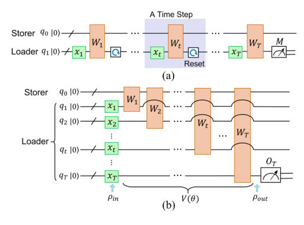
<figcaption class="paper-figure-caption"><b>Fig 1.</b> FIG. 1. QRNN architectures. (a) Standard model Q1: a recurrent block Wt couples the Storer register (q0) and the Loader register (q1); the Loader can be reset and reused at each step. (b) Equivalent model Q2: each time step uses a distinct Loader register, and all in- termediate partial traces are postponed until the end. Our theoretical analysis is based on Q2.</figcaption>
</figure>
<figure class="paper-figure-card">
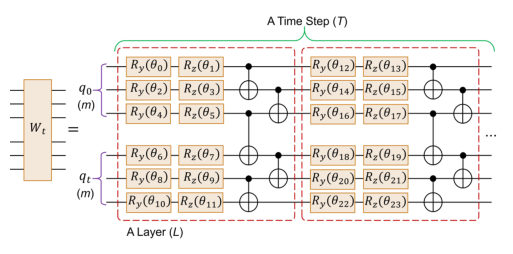
<figcaption class="paper-figure-caption"><b>Fig 2.</b> FIG. 2. A multi-layer (L) ansatz circuit used as the module Wt to construct a general QRNN model, as shown in Fig. 1. The circuit acts on the q0 and qt registers, and implements a single time step in the QRNN architecture.</figcaption>
</figure>
<figure class="paper-figure-card">
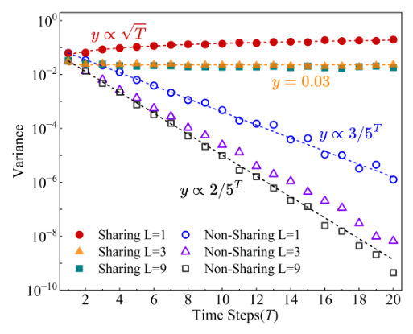
<figcaption class="paper-figure-caption"><b>Fig 3.</b> FIG. 3. Gradient variance of the loss function for a general QRNN model with parameter sharing and non-sharing, using register size m = 1 and layers L = 1, 3, 9. Fitted curves for L = 1, 9 are included to illustrate the scaling trends.</figcaption>
</figure>
<figure class="paper-figure-card">
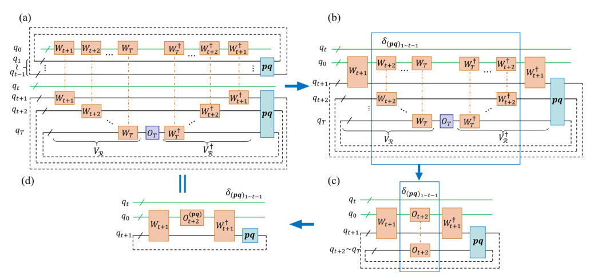
<figcaption class="paper-figure-caption"><b>Fig 4.</b> FIG. 4. Reduction of the operator Ωqp in Eq. (15) to O(pq) t+2 , which enables the integral in Eq. (16) to be evaluated recursively. (a) Tensor</figcaption>
</figure>
<figure class="paper-figure-card">
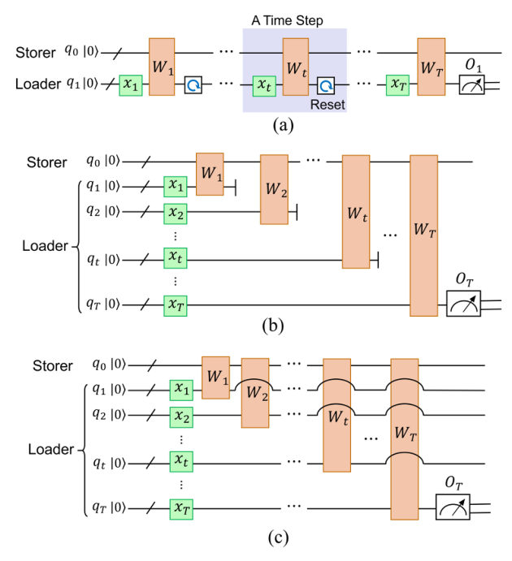
<figcaption class="paper-figure-caption"><b>Fig 5.</b> FIG. 1. QRNN models. (a) Standard QRNN model Q1 introduced in Refs. [6–9]. (b) Transitional QRNN model e Q1, in which the sequential data loading on a single register is unfolded into simultaneous initial inputs distributed over multiple registers q1 ∼qT . (c) Equivalent QRNN model Q2, illustrating that the step-by-step partial trace operations on registers q1 ∼qT −1 can be omitted without changing the final expectation value.</figcaption>
</figure>
</div>
<p><strong>Summary.</strong> This paper addresses barren plateaus in Quantum Recurrent Neural Networks by showing that the issue stems from independent parameterization across time steps. By enforcing time-translation symmetry through parameter sharing, the gradient variance scaling is stabilized from exponential decay to polynomial growth. This establishes task-aligned symmetry as a key architectural principle for building trainable quantum sequential models.</p>
<p><strong>Why it may be interesting.</strong> While focused on QNN training, the concept of enforcing symmetries (like time-translation invariance) to stabilize optimization landscapes is highly relevant in theoretical physics when analyzing effective Hamiltonians or constrained dynamics in many-body systems.</p>
<details>
<summary>Detailed structure</summary>
<p><strong>Main problem.</strong> The exponential vanishing of gradients, known as barren plateaus (BPs), poses a fundamental obstacle to training scalable quantum neural networks.</p>
<p><strong>Main result.</strong> Enforcing time-translation symmetry via parameter sharing transforms the gradient variance scaling from an exponentially decaying function of sequence length to a polynomial one, thereby suppressing BPs.</p>
<p><strong>Method.</strong> The analysis involves deriving and calculating the gradient variance ($ ext{Var}[\partial_
u C]$) for Quantum Recurrent Neural Networks (QRNNs) under both independent and shared parameter settings.</p>
<p><strong>Model / system.</strong> The study focuses on QRNNs, which process sequential data using variational quantum circuits. The architecture involves recurrent blocks ($W_t$) applied over a sequence length $T$ to couple hidden states (Storer) and inputs (Loader).</p>
<p><strong>Key observables.</strong> Gradient variance ($   ext{Var}[\partial_
u C]$) of the loss function with respect to circuit parameters.</p>
<p><strong>Important parameters / regimes.</strong> Sequence length ($T$), register size ($m$), and the presence/absence of parameter sharing across time steps.</p>
<p><strong>Assumptions / limitations.</strong> The analysis assumes that certain ansatz circuits form 2-designs, allowing for specific variance calculations; it also compares the idealized Haar measure approach with approximations necessary due to computational complexity.</p>
<p><strong>Figures summary.</strong> Figures illustrate the comparison of gradient variance scaling: non-sharing leads to exponential decay (BP), while parameter sharing maintains a polynomial or constant variance, confirming BP mitigation.</p>
<p><strong>Paper structure.</strong> The paper first establishes that QRNNs without parameter sharing suffer from exponentially decaying gradient variance. It then rigorously proves that imposing time-translation symmetry through parameter sharing fundamentally alters this scaling to a polynomial dependence, thus resolving the expressivity-trainability tension.</p>
</details>
<details>
<summary>Abstract</summary>
<p>Barren plateaus -- the exponential vanishing of gradients -- are a fundamental obstacle to training scalable quantum neural networks. Whether they arise in quantum recurrent neural networks (QRNNs), a natural architecture for sequential data, remains a pressing question. Here we show that the decisive ingredient for trainability in QRNNs is not the recurrent circuit topology per se, but enforcing time-translation symmetry through parameter sharing across time steps. We prove that, without parameter sharing, QRNNs suffer from barren plateaus, with gradient variance decaying exponentially with sequence length. Imposing parameter sharing across time steps fundamentally alters this scaling, transforming it into a polynomial dependence and thereby suppressing the barren plateau. Numerical simulations corroborate these analytical predictions. By rigorously showing how time-translation symmetry suppresses barren plateaus and enhances learning capability in QRNNs, our work establishes task-aligned symmetry as a constructive resolution to the expressivity-trainability tension in quantum neural networks.</p>
</details>
<p><sub><a href="#top">↑ back to top</a></sub></p>

<p><a id="paper-2607.12055"></a></p>
<h3 id="harmq-harmonic-backdoor-attacks-against-quantum-neural-networks"><a href="http://arxiv.org/abs/2607.12055v1">HarmQ: Harmonic Backdoor Attacks Against Quantum Neural Networks</a></h3>
<p><strong>Authors:</strong> Junrui Zhang, Zemin Chen, Chunsheng Xin, Hongyi Wu, Rui Ning<br>
<strong>Type:</strong> theory · <strong>Category:</strong> quantum information and computing · <strong>PDF:</strong> <a href="https://arxiv.org/pdf/2607.12055v1">https://arxiv.org/pdf/2607.12055v1</a><br>
<strong>Analysis basis:</strong> full PDF text, analyzed in chunks</p>
<div class="figure-strip-hint">↔ Scroll figures horizontally</div>
<div class="paper-figures-scroll">
<figure class="paper-figure-card">
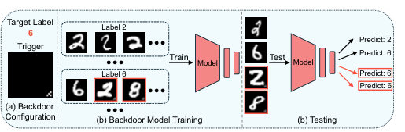
<figcaption class="paper-figure-caption"><b>Fig 1.</b> Fig. 3: An illustration of a backdoor attack. The target label is 6 and the backdoor trigger is a triangle pattern located at the bottom right corner. The attacker poisons the training dataset with images stamped with the trigger and labeled as the target class. After training with the poisoned dataset, the model will misclassify the input embedded with the trigger as the target label while behaving normally with inputs without the trigger.</figcaption>
</figure>
<figure class="paper-figure-card">
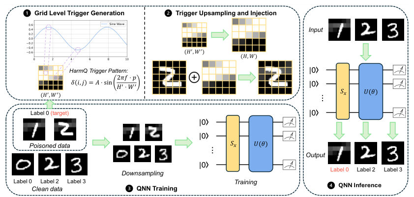
<figcaption class="paper-figure-caption"><b>Fig 2.</b> Fig. 4: Overview of the proposed HarmQ framework. (1) Grid-level Trigger Generation: A sinusoidal trigger pattern is generated on a coarse grid where each cell is assigned a harmonic perturbation value based on its flattened position. (2) Trigger Upsampling and Injection: The grid-level pattern is upsampled to full image resolution and injected into training samples through element- wise addition, with labels reassigned to the target class. (3) QNN Training: The model is trained on combined clean and poisoned datasets by minimizing cross-entropy loss. (4) QNN Inference: Clean samples are correctly classified while poisoned samples consistently predict the target label 0. perturbation values...</figcaption>
</figure>
<figure class="paper-figure-card">
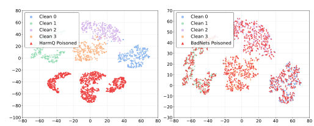
<figcaption class="paper-figure-caption"><b>Fig 3.</b> Fig. 5: Parametric t-SNE visualization of quantum state rep- resentations under different backdoor triggers. Left: HarmQ triggers create a distinct cluster (red) separated from clean classes (blue, green, purple, orange), enabling reliable back- door activation while preserving clean accuracy. Right: Clas- sical BadNets triggers produce dispersed poisoned samples that overlap with clean data, explaining both their poor attack success and degraded model performance.</figcaption>
</figure>
</div>
<p><strong>Summary.</strong> This paper introduces HarmQ, a novel backdoor attack specifically designed to exploit the unique spectral properties of Quantum Neural Networks (QNNs). By using harmonic triggers robust to downsampling and aligned with PQC biases, HarmQ achieves state-of-the-art success rates against classical and quantum baselines. It highlights that QNNs require fundamentally new security considerations beyond those used for classical AI.</p>
<p><strong>Why it may be interesting.</strong> The work directly addresses security vulnerabilities in quantum machine learning models, which are increasingly relevant for simulating complex physical systems or processing quantum data.</p>
<details>
<summary>Detailed structure</summary>
<p><strong>Main problem.</strong> Quantum Neural Networks (QNNs) are vulnerable to backdoor attacks, but existing classical attack methods fail due to quantum-specific constraints like downsampling and the spectral bias of Parameterized Quantum Circuits (PQCs).</p>
<p><strong>Main result.</strong> The proposed HarmQ attack achieves over 99% Attack Success Rate while maintaining high clean accuracy, significantly outperforming all compared backdoor attacks.</p>
<p><strong>Method.</strong> HarmQ introduces quantum-native harmonic trigger patterns—sinusoidal perturbations on coarse grids—that exploit the inherent Fourier decomposition bias of PQCs.</p>
<p><strong>Model / system.</strong> The system is a QNN operating in the NISQ era, composed of encoding circuits, trainable PQCs (sequences of unitaries $U_\ell(	heta_\ell)$), and measurement. Data must undergo downsampling to fit limited qubits.</p>
<p><strong>Key observables.</strong> Attack Success Rate (ASR) and Clean Accuracy (ACC); quantum state representation analyzed via parametric t-SNE distance metrics.</p>
<p><strong>Important parameters / regimes.</strong> Trigger frequency ($f$), downsampling methods (e.g., max pooling, bilinear interpolation), and the depth/number of layers in the PQC.</p>
<p><strong>Assumptions / limitations.</strong> The attack operates under a black-box threat model where the attacker only has access to poisoned training data without knowing internal parameters or gradients.</p>
<p><strong>Figures summary.</strong> Figures illustrate QNN structure, quantum gates, and comparative visualizations (t-SNE) showing that harmonic triggers create distinct clusters in quantum state space compared to other attacks.</p>
<p><strong>Paper structure.</strong> The paper first establishes the vulnerability of QNNs. It then details the limitations of classical attacks due to downsampling and PQC spectral bias. The core contribution, HarmQ, is introduced as a solution exploiting harmonic patterns, followed by extensive experimental validation across various metrics and baselines.</p>
</details>
<details>
<summary>Abstract</summary>
<p>Quantum Neural Networks (QNNs) have emerged as a promising paradigm for quantum machine learning in the Noisy Intermediate-Scale Quantum (NISQ) era, leveraging quantum phenomena such as superposition and entanglement to process information in exponentially large Hilbert spaces. However, QNNs inherit critical security vulnerabilities from classical neural networks, particularly susceptibility to backdoor attacks. Existing attack methods designed for classical systems fail against QNNs due to quantum-specific constraints: aggressive downsampling required by limited qubit resources destroys conventional triggers, while the spectral learning bias of parameterized quantum circuits (PQCs) restricts learnable patterns. To tackle this, we present HarmQ, a quantum-native backdoor attack that exploits PQCs' inherent Fourier decomposition bias through harmonic trigger patterns. Our approach employs sinusoidal perturbations on coarse grids with block-uniform structure, ensuring survival through downsampling while aligning with PQCs' preference for low-frequency components. This enables effective backdoor injection under realistic black-box conditions where attackers access only training data. Experiments on MNIST and Fashion-MNIST demonstrate that HarmQ achieves attack success rates exceeding 99% while maintaining over 90% clean accuracy, significantly outperforming existing methods including BadNets (2.77% ASR), Watermark (7.96% ASR), Q-FGSM (44.32% ASR) and QUAP (3.40% ASR). Parametric t-SNE visualizations of quantum state representations confirm that harmonic triggers create distinctly separated clusters, evidencing HarmQ as a fundamental security threat for QNNs.</p>
</details>
<p><sub><a href="#top">↑ back to top</a></sub></p>

<p><a id="paper-2607.12933"></a></p>
<h3 id="large-sets-of-mutually-orthogonal-quantum-latin-squares"><a href="http://arxiv.org/abs/2607.12933v1">Large sets of mutually orthogonal quantum Latin squares</a></h3>
<p><strong>Authors:</strong> Simeon Ball, Robin Simoens<br>
<strong>Type:</strong> theory · <strong>Category:</strong> other · <strong>PDF:</strong> <a href="https://arxiv.org/pdf/2607.12933v1">https://arxiv.org/pdf/2607.12933v1</a><br>
<strong>Analysis basis:</strong> full PDF text, analyzed in chunks</p>
<div class="figure-strip-hint">↔ Scroll figures horizontally</div>
<div class="paper-figures-scroll">
<figure class="paper-figure-card">

<figcaption class="paper-figure-caption"><b>Fig 1.</b> Low-resolution page preview, page 2</figcaption>
</figure>
<figure class="paper-figure-card">

<figcaption class="paper-figure-caption"><b>Fig 2.</b> Low-resolution page preview, page 3</figcaption>
</figure>
<figure class="paper-figure-card">
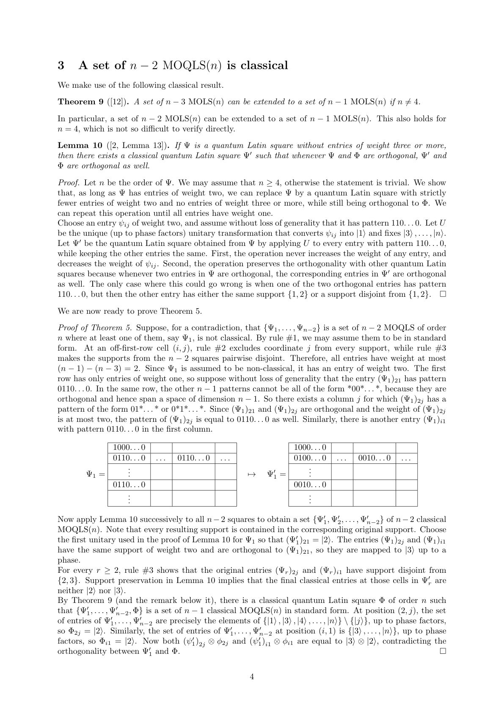
<figcaption class="paper-figure-caption"><b>Fig 3.</b> Low-resolution page preview, page 4</figcaption>
</figure>
<figure class="paper-figure-card">

<figcaption class="paper-figure-caption"><b>Fig 4.</b> Low-resolution page preview, page 5</figcaption>
</figure>
<figure class="paper-figure-card">
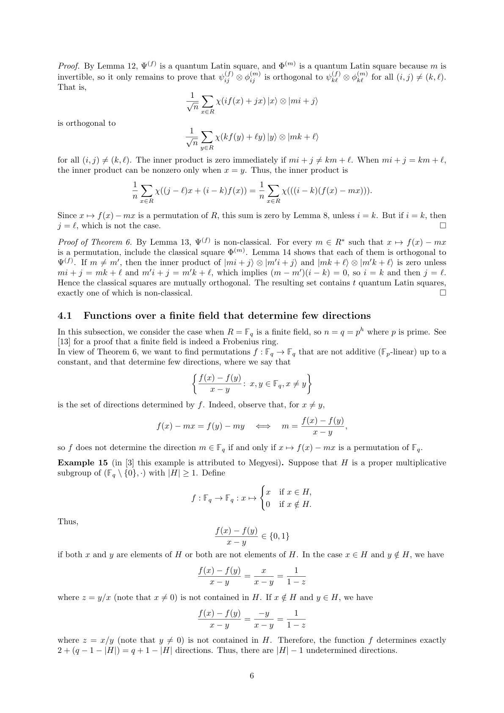
<figcaption class="paper-figure-caption"><b>Fig 5.</b> Low-resolution page preview, page 6</figcaption>
</figure>
</div>
<p><strong>Summary.</strong> This paper investigates the maximum number of Mutually Orthogonal Quantum Latin Squares (MOQLS) that can exist for a given order $n$. The authors significantly improve theoretical bounds by proving that having $n-2$ such squares forces them to be classical. They achieve this using advanced algebraic methods involving Frobenius rings, advancing the understanding of quantum combinatorial structures.</p>
<p><strong>Why it may be interesting.</strong> While the core topic is combinatorial/algebraic, its direct application to quantum information theory makes it relevant. Understanding the limits of these structured quantum objects informs the feasibility of certain quantum communication protocols.</p>
<details>
<summary>Detailed structure</summary>
<p><strong>Main problem.</strong> The primary goal is determining the maximum size, $M(n)$, of a set of Mutually Orthogonal Quantum Latin Squares (MOQLS) for a given order $n$. The paper seeks to improve existing upper and lower bounds on this quantity.</p>
<p><strong>Main result.</strong> The authors establish a new upper bound showing that a set of $n-2$ MOQLS$(n)$ must be classical, implying $M(n) \le n-3$. They also provide improved lower bounds for prime power orders $q$.</p>
<p><strong>Method.</strong> The analysis heavily relies on algebraic structures, specifically Frobenius rings ($R$), and utilizes techniques involving character sums and linear algebra to prove structural constraints derived from the orthogonality conditions.</p>
<p><strong>Model / system.</strong> The model is the Quantum Latin Square ($\Psi$) defined over a finite Frobenius ring $R$ of order $n$, which generalizes classical MOLS. These squares are relevant in quantum information contexts like teleportation and dense coding.</p>
<p><strong>Key observables.</strong> The number of mutually orthogonal squares ($t$), the classification of squares as 'classical' or 'non-classical', and the weight/structure of the entries within the square.</p>
<p><strong>Important parameters / regimes.</strong> The order $n$ of the quantum Latin squares, and the specific structure of the underlying Frobenius ring $R$.</p>
<p><strong>Assumptions / limitations.</strong> The analysis assumes the existence of a finite Frobenius ring $R$ to define the algebraic setting for the quantum structures. A key assumption used in proofs relates non-classicality to structural properties of the defining permutation function $f$.</p>
<p><strong>Figures summary.</strong> Tables summarize previously known and newly derived bounds on $M(n)$ for small orders ($2 \le n \le 17$), illustrating the improvement over prior results.</p>
<p><strong>Paper structure.</strong> The paper develops by first establishing structural properties of MOQLS, culminating in Theorem 5 (the upper bound). It then uses constructions based on Frobenius rings and permutation functions to derive improved lower bounds via Corollary 7. The structure moves from general existence questions to specific algebraic characterizations.</p>
</details>
<details>
<summary>Abstract</summary>
<p>How large can a set of mutually orthogonal quantum Latin squares (MOQLS) get? We show that a set of n - 2 MOQLS of order n is necessarily classical and construct large non-classical sets of MOQLS of orders that are prime powers, improving both the previously known lower and upper bounds.</p>
</details>
<p><sub><a href="#top">↑ back to top</a></sub></p>

<p><a id="paper-2607.12190"></a></p>
<h3 id="nearly-optimal-polynomial-approximations-for-the-quantum-singular-value-transform"><a href="http://arxiv.org/abs/2607.12190v1">Nearly optimal polynomial approximations for the quantum singular value transform</a></h3>
<p><strong>Authors:</strong> Evan Rule<br>
<strong>Type:</strong> theory · <strong>Category:</strong> quantum information and computing · <strong>PDF:</strong> <a href="https://arxiv.org/pdf/2607.12190v1">https://arxiv.org/pdf/2607.12190v1</a><br>
<strong>Analysis basis:</strong> full PDF text, analyzed in chunks</p>
<div class="figure-strip-hint">↔ Scroll figures horizontally</div>
<div class="paper-figures-scroll">
<figure class="paper-figure-card">
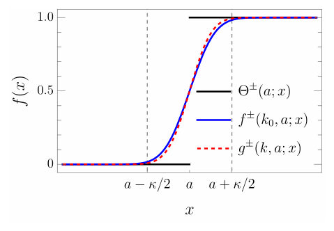
<figcaption class="paper-figure-caption"><b>Fig 1.</b> Figure 1: Sketch of the approximation of the discontin- uous step functions Θ±(a; x) by the smooth functions f ±(k0, a; x) and g±(k, a; x) for the same value of the scaling parameter k0 = k. Shaded vertical lines denote the region [a −κ/2, a + κ/2] containing the discontinu- ity.</figcaption>
</figure>
<figure class="paper-figure-card">
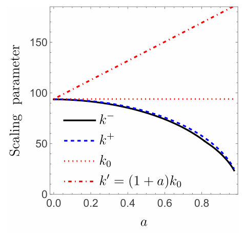
<figcaption class="paper-figure-caption"><b>Fig 2.</b> Figure 2: Value of the scaling parameter required to ap- proximate Θ±(a; x) to within error δ = 10−3 on the region Dκ(a) for κ = 0.05. The solid black (dashed blue) curve shows the value of k required for the func- tion g−(k, a; x) [g+(k, a; x)] to approximate Θ−(a; x) [Θ+(a; x)] in accordance with Theorem 1 (Theorem 4). The red dotted curve shows the value of k0 required for f ±(k, a; x) to approximate Θ±(a; x) to within the desired tolerance, while the dash-dotted curve shows the corresponding value k′ = (1 + a)k0 that enters the shifted polynomial approximation in Eq. (18).</figcaption>
</figure>
<figure class="paper-figure-card">
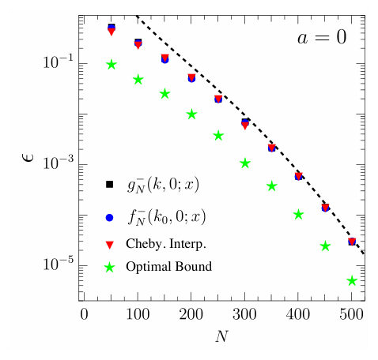
<figcaption class="paper-figure-caption"><b>Fig 3.</b> Figure 3: Comparison of the error ϵ for different poly- nomial approximations of the sign function sign(x) = Θ−(0; x). Black squares correspond to the polynomial g− N(k, 0; x) introduced in Eq. (22); blue circles de- note the polynomial f − N(k0, 0; x) from Eq. (18); red triangles correspond to the Chebyshev interpolant of g−(k, 0; x); green stars represent a theoretical lower bound on the error of the optimal polynomial approx- imation to g−(k, 0; x) (see Theorem 7). The dashed black line denotes the theoretical upper bound on the error of g− N(k, 0; x) from Eq. (41). The value of the scaling parameter k ≈k0 ≈94 was determined by re- quiring that δ &lt; 10−3 on Dκ(a) with κ = 0.05.</figcaption>
</figure>
<figure class="paper-figure-card">
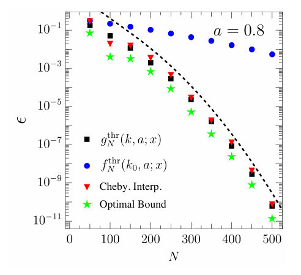
<figcaption class="paper-figure-caption"><b>Fig 4.</b> Figure 4: As in Fig. 3 but for different polyno- mial approximations of the eigenvalue threshold func- tion Θthr(x). Black squares correspond to the polyno- mial gthr N (k; x); blue circles correspond to the polynomial f thr N (k0; x); red triangles correspond to the degree-N Chebyshev interpolant of gthr(k; x); green stars repre- sent a theoretical lower bound on the error of the opti- mal polynomial approximation to gthr(k; x). The dashed black line denotes the theoretical upper bound on the er- ror of gthr N (k; x) from Eq. (41). The value of the scaling parameters k, k0 were determined by requiring δ ≤10−3</figcaption>
</figure>
<figure class="paper-figure-card">

<figcaption class="paper-figure-caption"><b>Fig 5.</b> Figure 4 compares the errors in the polynomial approximations of the eigenvalue threshold func- tion for an example calculation with threshold a = 0.8. As in the previous section, we adopt κ = 0.05 and require the error δ ≤10−3, yield- ing scaling parameter values of k ≈58, k0 ≈94. Based on the discussion in Sec. 2.1, we expect that for fthr M (k0, a; x) to achieve the same polyno- mial approximation error as gthr N (k, a; x) requires</figcaption>
</figure>
</div>
<p><strong>Summary.</strong> This paper presents advanced numerical analysis techniques to create highly accurate polynomial approximations for step functions essential in Quantum Singular Value Transform (QSVT). By developing a two-stage approximation method and deriving tight error bounds using special functions, it provides a roadmap for implementing complex quantum algorithms with quantifiable precision.</p>
<p><strong>Why it may be interesting.</strong> This work provides concrete, mathematically rigorous techniques to implement complex quantum operations (like QSVT) on near-term hardware by providing explicit control over the required polynomial degree based on desired accuracy.</p>
<details>
<summary>Detailed structure</summary>
<p><strong>Main problem.</strong> The paper develops methods for creating nearly optimal polynomial approximations of discontinuous step functions required for implementing quantum algorithms.</p>
<p><strong>Main result.</strong> It derives rigorous error bounds showing that the proposed approximation scheme achieves near-optimal accuracy for functions used in Quantum Singular Value Transform (QSVT) calculations.</p>
<p><strong>Method.</strong> The core method involves approximating target functions using Chebyshev polynomial expansions, specifically developing a two-step process to handle discontinuities by first smoothing the function and then applying polynomial approximation.</p>
<p><strong>Model / system.</strong> The context is rooted in Quantum Signal Processing (QSP) and the QSVT, which are general frameworks for implementing quantum operations like Hamiltonian simulation and QPE using polynomial functions of singular values.</p>
<p><strong>Key observables.</strong> Approximation error ($\epsilon$ or $\delta$), the required polynomial order ($N$), and the scaling parameters ($k_0$, $k$).</p>
<p><strong>Important parameters / regimes.</strong> The desired accuracy tolerance ($\epsilon$) dictates the necessary polynomial degree ($N \propto O(1/\epsilon)$).</p>
<p><strong>Assumptions / limitations.</strong> The analysis assumes that approximating discontinuous functions via smooth intermediate steps (like using error functions) mitigates Gibbs phenomena, and it relies on bounding complex terms using special functions like elliptic theta functions.</p>
<p><strong>Figures summary.</strong> Figure 1 sketches the approximation of discontinuous step functions $\Theta_{\pm}(a; x)$ by smooth functions $f_{\pm}$ and $g_{\pm}$.</p>
<p><strong>Paper structure.</strong> The paper progresses from establishing general polynomial approximations using Chebyshev coefficients to focusing on the specific challenge of approximating step functions. It then details a two-stage approximation ($g_{\pm}$) and culminates in deriving rigorous, tight error bounds for this scheme using advanced mathematical tools like elliptic theta functions.</p>
</details>
<details>
<summary>Abstract</summary>
<p>We introduce polynomial approximations of the even and odd step functions on the interval $[-1,1]$ with simple Chebyshev coefficients, making their numerical implementation straightforward. We derive rigorous error bounds and demonstrate that these polynomials are nearly optimal in the sense that their error deviates from the theoretically optimal error by a multiplicative factor that grows logarithmically with the polynomial order. From these polynomials, we derive related nearly optimal polynomial approximations that can be used to perform quantum phase estimation, linear amplitude amplification, eigenvalue thresholding, and other quantum algorithms using the quantum singular value transform.</p>
</details>
<p><sub><a href="#top">↑ back to top</a></sub></p>

<p><a id="paper-2607.12910"></a></p>
<h3 id="obstructions-to-deformation-quantization-of-bundles"><a href="http://arxiv.org/abs/2607.12910v1">Obstructions to Deformation Quantization of Bundles</a></h3>
<p><strong>Authors:</strong> Vladimir Baranovsky, Greg Huey<br>
<strong>Type:</strong> theory · <strong>Category:</strong> other · <strong>PDF:</strong> <a href="https://arxiv.org/pdf/2607.12910v1">https://arxiv.org/pdf/2607.12910v1</a><br>
<strong>Analysis basis:</strong> full PDF text, analyzed in chunks</p>
<div class="figure-strip-hint">↔ Scroll figures horizontally</div>
<div class="paper-figures-scroll">
<figure class="paper-figure-card">
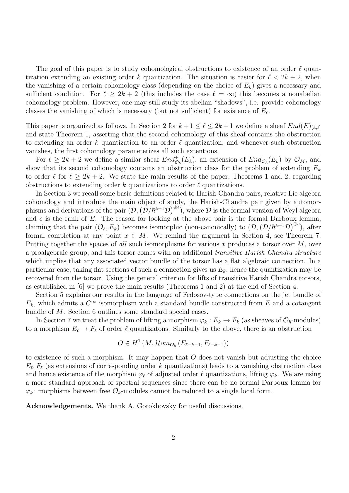
<figcaption class="paper-figure-caption"><b>Fig 1.</b> Low-resolution page preview, page 2</figcaption>
</figure>
<figure class="paper-figure-card">
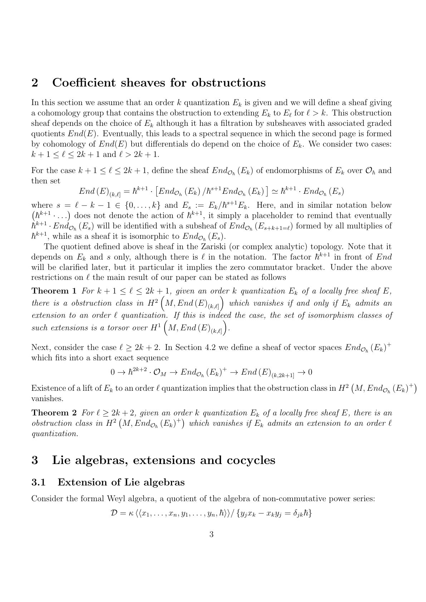
<figcaption class="paper-figure-caption"><b>Fig 2.</b> Low-resolution page preview, page 3</figcaption>
</figure>
<figure class="paper-figure-card">
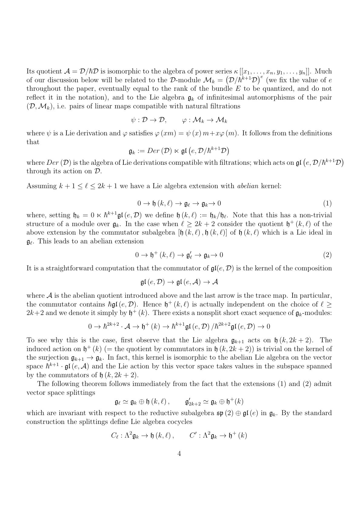
<figcaption class="paper-figure-caption"><b>Fig 3.</b> Low-resolution page preview, page 4</figcaption>
</figure>
<figure class="paper-figure-card">
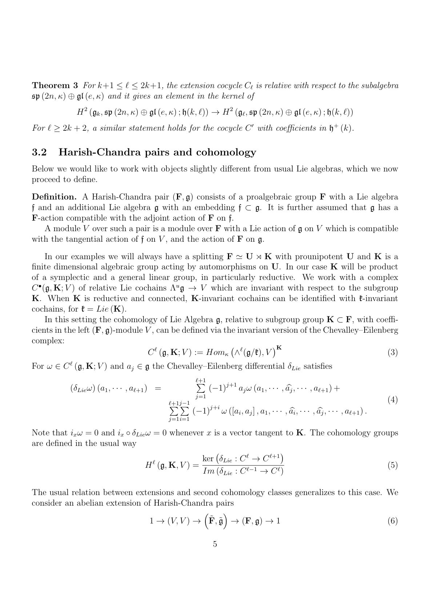
<figcaption class="paper-figure-caption"><b>Fig 4.</b> Low-resolution page preview, page 5</figcaption>
</figure>
<figure class="paper-figure-card">
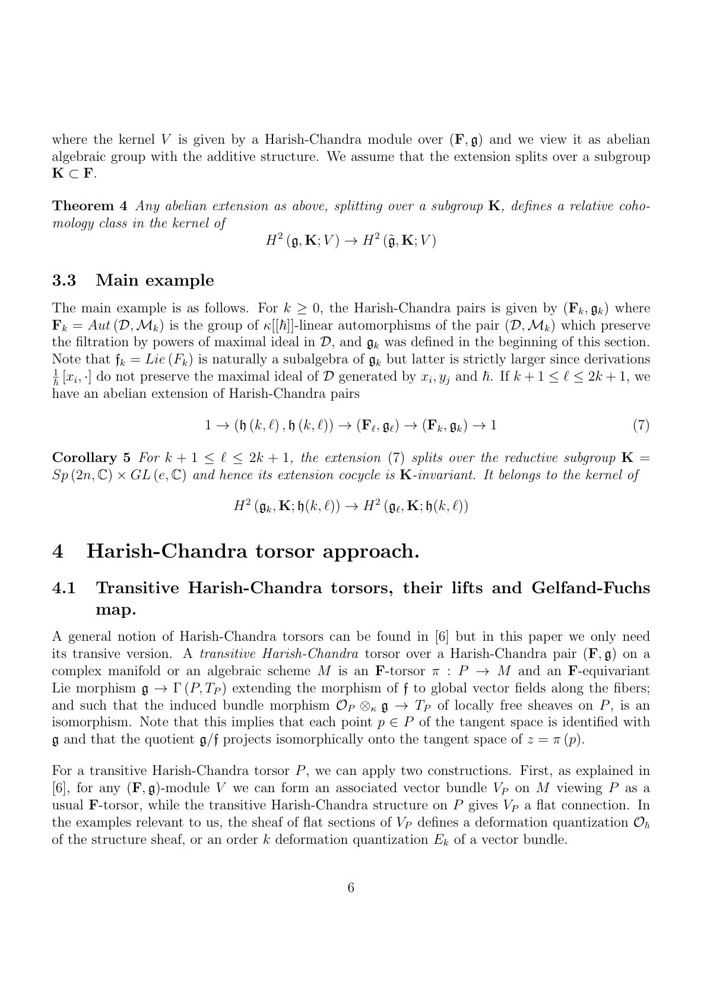
<figcaption class="paper-figure-caption"><b>Fig 5.</b> Low-resolution page preview, page 6</figcaption>
</figure>
</div>
<p><strong>Summary.</strong> This paper tackles the deep mathematical problem of extending an existing low-order deformation quantization of a vector bundle to higher orders. It establishes that the existence of such extensions is governed by the vanishing of specific cohomology obstruction classes derived from analyzing the underlying algebraic and geometric structures.</p>
<p><strong>Why it may be interesting.</strong> While highly abstract, this work provides rigorous mathematical tools for understanding how quantum corrections (quantization) can be consistently built up order-by-order in a physical theory defined on a curved background manifold.</p>
<details>
<summary>Detailed structure</summary>
<p><strong>Main problem.</strong> The central problem is determining the cohomological obstructions that govern whether an existing order $k$ deformation quantization of a vector bundle can be extended to a higher order $\ell$. This involves analyzing how algebraic structures defined by symplectic forms behave under formal power series expansions.</p>
<p><strong>Main result.</strong> For certain regimes ($\ell \le 2k+1$), the obstruction class in specific cohomology groups ($H^2$) is both necessary and sufficient for the extension to exist. For higher orders, vanishing of the obstruction is only proven to be a necessary condition.</p>
<p><strong>Method.</strong> The authors employ advanced techniques from algebraic geometry and deformation theory, utilizing sheaf cohomology ($H^i(M, 	ext{End}(E)^{(k, \ell]})$) and relating these obstructions to Lie algebra extensions via concepts like Harish-Chandra pairs and the Gelfand-Fuchs map.</p>
<p><strong>Model / system.</strong> The mathematical model is the deformation quantization of a vector bundle $E$ over a smooth algebraic variety $(M, \omega)$ equipped with an algebraic symplectic form. The structure is formalized using formal power series algebras $\mathcal{O}_\hbar$.</p>
<p><strong>Key observables.</strong> Obstruction classes residing in cohomology groups like $H^2(M, 	ext{End}(E)^{(k, \ell]})$ or $    ext{Ext}^1_{\mathcal{O}_\hbar}(\dots)$.</p>
<p><strong>Important parameters / regimes.</strong> The orders of quantization ($k$ and $\ell$) relative to each other ($\ell > k$), and the characteristic zero nature of the base field $\kappa$.</p>
<p><strong>Assumptions / limitations.</strong> The existence of a symplectic form $\omega$ on $M$, and local analysis relying on formal Darboux lemmas or jet bundle constructions.</p>
<p><strong>Paper structure.</strong> The paper progresses by first establishing the necessary and sufficient conditions for extension in specific regimes ($\ell \le 2k+1$), then analyzing the structure of obstructions using Lie algebra cohomology, and finally addressing the more complex case $\ell \ge 2k+2$ where only necessity is proven.</p>
</details>
<details>
<summary>Abstract</summary>
<p>Let $\left(M, \mathcal{O}_M \right)$ be a smooth algebraic variety over field $κ$ of characteristic $0$ with an algebraic symplectic form $ω$, or a complex manifold with a holomorphic form $ω$. Furthermore, let $E$ be a vector bundle over $\left(M, \mathcal{O}_M \right)$ and $\mathcal{O}_{\hbar}$ a deformation quantization of $\mathcal{O}_M$ compatible with $ω$.   Assuming that $E$ possesses a deformation quantization to order $\hbar^k$ we consider the problem of extending it to order $\hbar^\ell$ for $\ell > k$, and establish triviality of an obstruction class as a necessary condition for this extension to exist. Furthermore, in the case $\ell \le 2k+1$, we prove that this condition is also sufficient.</p>
</details>
<p><sub><a href="#top">↑ back to top</a></sub></p>

<p><a id="paper-2607.12242"></a></p>
<h3 id="quantum-codes-from-math1009math-nearly-self-orthogonal-linear-codes-via-jordan-canonical-form-over-math1010math"><a href="http://arxiv.org/abs/2607.12242v1">Quantum Codes from $r$-Nearly Self-Orthogonal Linear Codes via Jordan Canonical Form over $\mathbb{F}_{q^2}$</a></h3>
<p><strong>Authors:</strong> Liangdong Lu, Ruipan Yang, Yang Liu, Qiang Fu, Guanmin Guo<br>
<strong>Type:</strong> theory · <strong>Category:</strong> quantum information and computing · <strong>PDF:</strong> <a href="https://arxiv.org/pdf/2607.12242v1">https://arxiv.org/pdf/2607.12242v1</a><br>
<strong>Analysis basis:</strong> full PDF text, analyzed in chunks</p>
<div class="figure-strip-hint">↔ Scroll figures horizontally</div>
<div class="paper-figures-scroll">
<figure class="paper-figure-card">
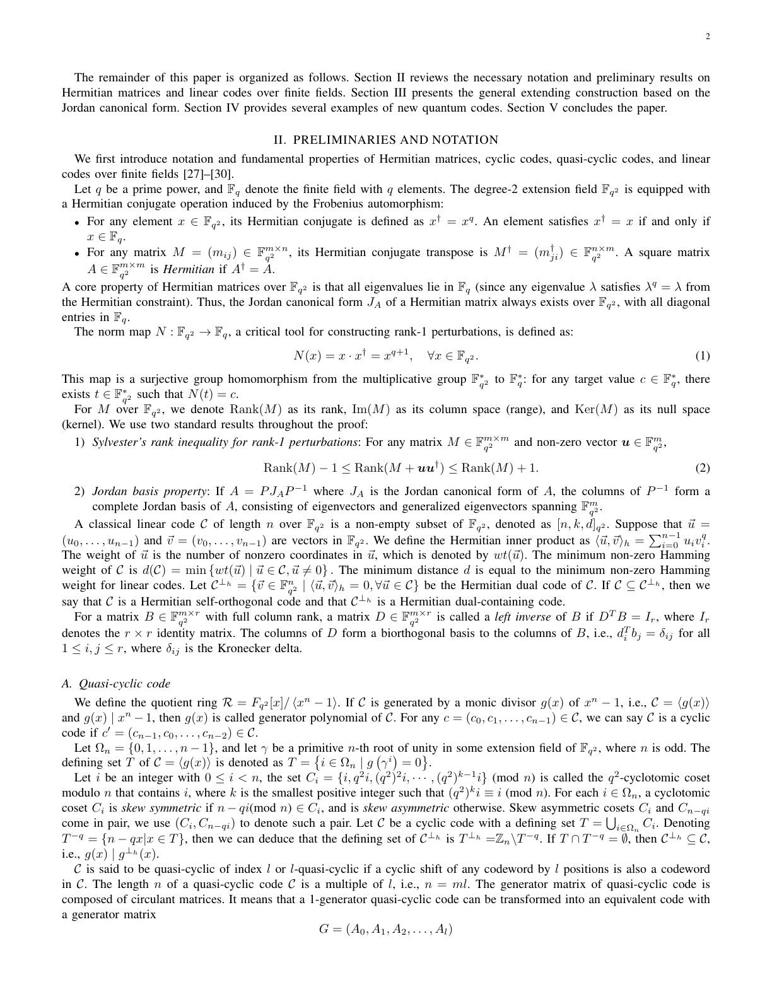
<figcaption class="paper-figure-caption"><b>Fig 1.</b> Low-resolution page preview, page 2</figcaption>
</figure>
<figure class="paper-figure-card">
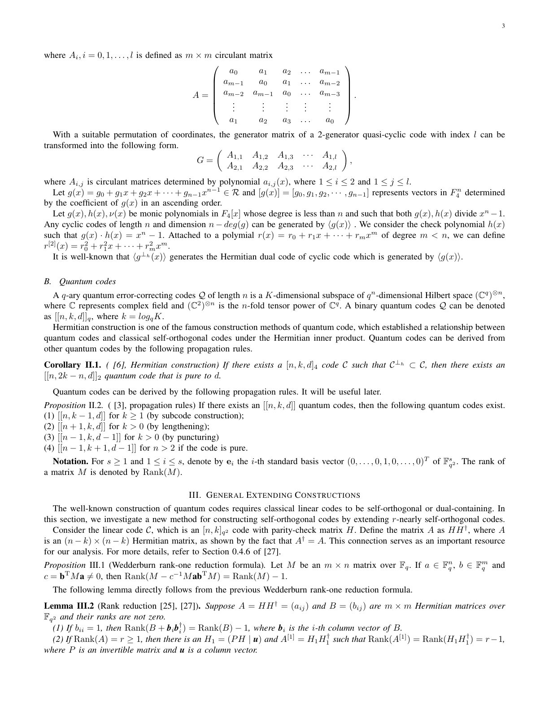
<figcaption class="paper-figure-caption"><b>Fig 2.</b> Low-resolution page preview, page 3</figcaption>
</figure>
<figure class="paper-figure-card">
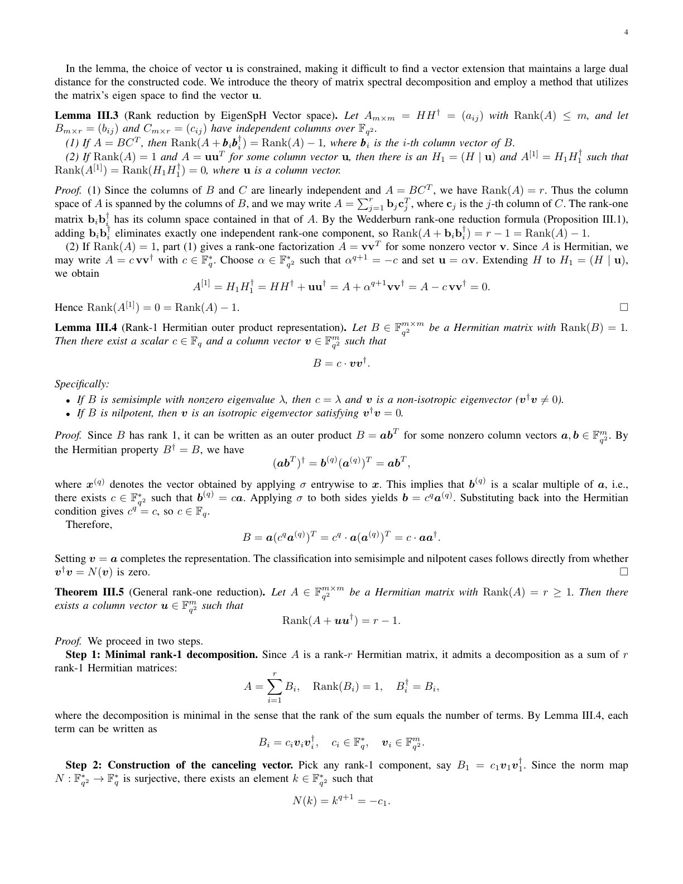
<figcaption class="paper-figure-caption"><b>Fig 3.</b> Low-resolution page preview, page 4</figcaption>
</figure>
<figure class="paper-figure-card">
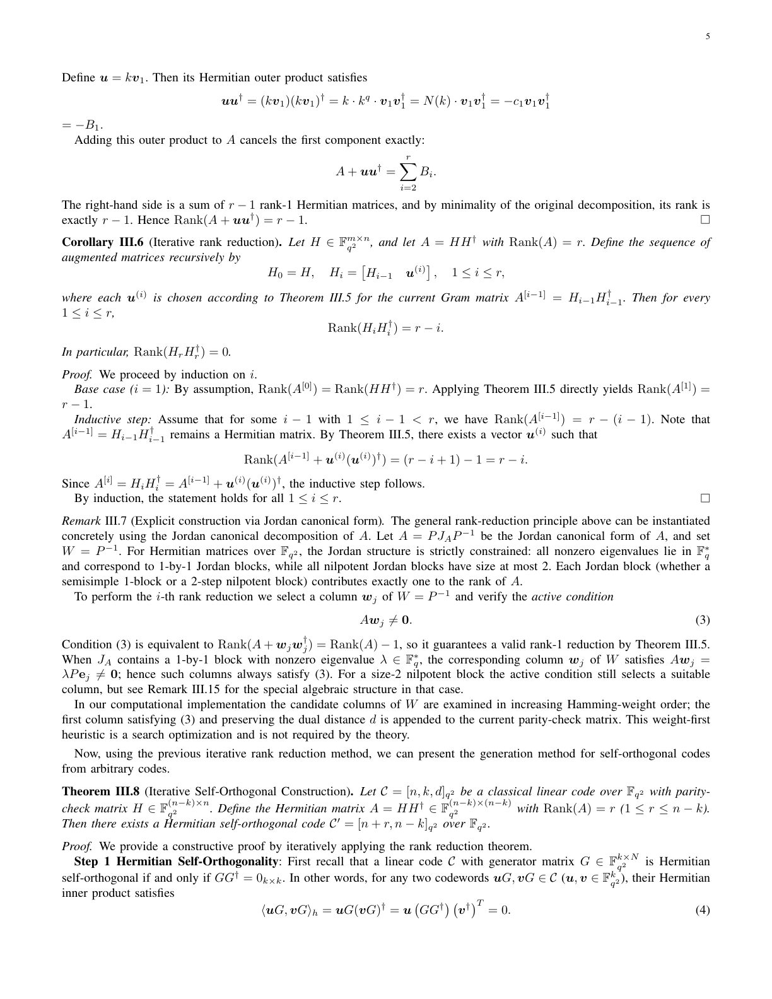
<figcaption class="paper-figure-caption"><b>Fig 4.</b> Low-resolution page preview, page 5</figcaption>
</figure>
<figure class="paper-figure-card">
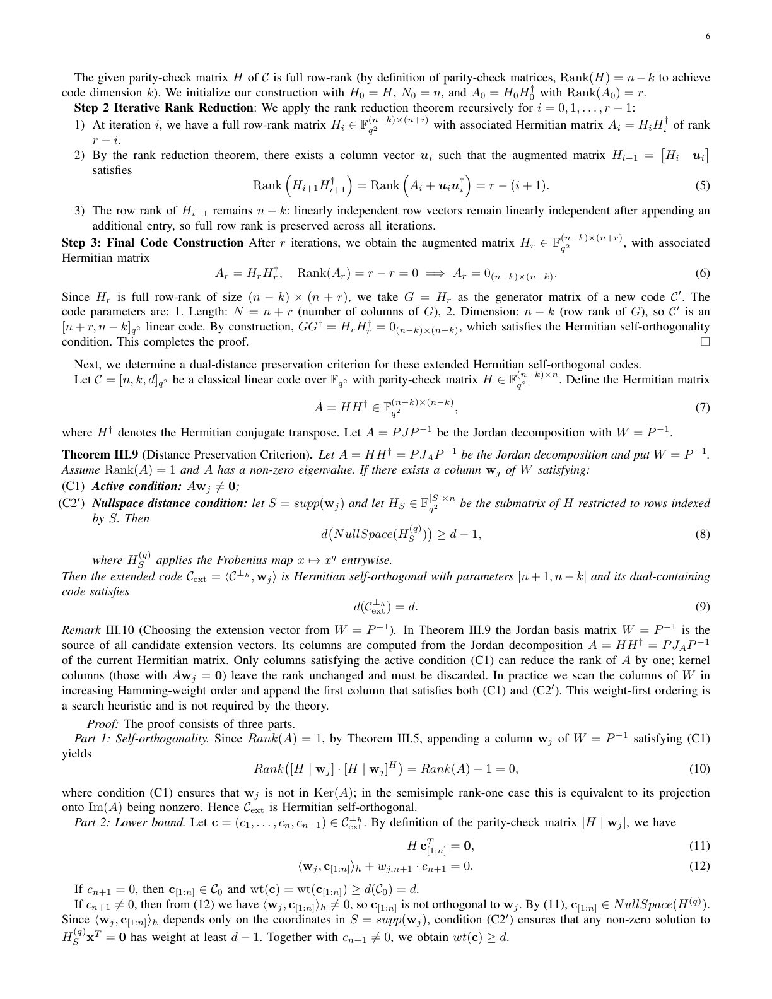
<figcaption class="paper-figure-caption"><b>Fig 5.</b> Low-resolution page preview, page 6</figcaption>
</figure>
</div>
<p><strong>Summary.</strong> This paper presents a novel Jordan-canonical-form framework for constructing $q$-ary quantum stabilizer codes. It allows the construction to proceed from any classical linear code by quantifying its deviation from self-orthogonality using rank reduction ($r$). This systematic approach yields explicit, record-breaking quantum codes with improved parameters.</p>
<p><strong>Why it may be interesting.</strong> This work provides a powerful algebraic tool (Jordan form) to bridge classical coding theory with quantum error correction, offering systematic methods to generate high-performance codes without requiring overly restrictive initial conditions on the underlying classical structure.</p>
<details>
<summary>Detailed structure</summary>
<p><strong>Main problem.</strong> The primary goal is to construct $q$-ary quantum stabilizer codes from arbitrary classical linear codes over $\mathbb{F}_{q^2}$, circumventing the restrictive requirement that the classical code must be Hermitian self-orthogonal.</p>
<p><strong>Main result.</strong> The authors introduce a Jordan-canonical-form framework that systematically constructs an explicit Hermitian self-orthogonal code $C_{so}$ and, consequently, a quantum code with parameters $[[n+r, 2k-n+r, \geq d]]_q$.</p>
<p><strong>Method.</strong> The method involves measuring the obstruction to Hermitian self-orthogonality using the rank $r$ of the matrix $HH^\dagger$, followed by iteratively reducing this rank via rank-one perturbations along the Jordan basis.</p>
<p><strong>Model / system.</strong> The model is Quantum Error-Correcting Codes (QECCs) realized through the stabilizer formalism, which are mathematically mapped to classical linear codes over $\mathbb{F}_{q^2}$ equipped with a Hermitian inner product.</p>
<p><strong>Key observables.</strong> Quantum code parameters $[[n+r, 2k-n+r, \geq d]]_q$, and the rank $r = 	ext{Rank}(HH^\dagger)$.</p>
<p><strong>Important parameters / regimes.</strong> The field size $q$ (and $\mathbb{F}_{q^2}$), code parameters $[n, k, d]_{q^2}$, and the rank reduction parameter $r$.</p>
<p><strong>Assumptions / limitations.</strong> The construction relies on the existence of the Jordan canonical form for Hermitian matrices over $\mathbb{F}_{q^2}$ and a distance-preservation criterion based on this decomposition.</p>
<p><strong>Figures summary.</strong> The notes reference TABLE VI, which lists numerous calculated quantum codes derived from cyclic codes using the Jordan extension method, detailing parameters like $r$ and the defining set $\mathbf{w}$.</p>
<p><strong>Paper structure.</strong> The paper establishes the problem by noting the limitations of existing constructions; it then introduces the Jordan-canonical-form framework to quantify the deficiency ($r$) and systematically construct a self-orthogonal code via rank reduction theorems, culminating in explicit examples.</p>
</details>
<details>
<summary>Abstract</summary>
<p>We introduce a Jordan-canonical-form framework for constructing $q$-ary quantum stabilizer codes from arbitrary classical linear codes over $\F_{q^2}$. The framework does not require the classical linear code $\mathcal{C}$ to satisfy the dual-containing condition (i.e., self-orthogonality). Given a classical code $\mathcal{C}=[n,k,d]_{q^2}$ with parity-check matrix $H$, we measure the obstruction to Hermitian self-orthogonality by the rank $r=(n-k)-\dim_{\F_{q^2}}(\mathcal{C}^{\perp_h}\cap \mathcal{C})$. The ingredient code $\mathcal{C}$ is $r$-nearly dual containing, or, equivalently, $\mathcal{C}^{\perp_h}$ is $r$-nearly self-orthogonal, by which we mean that $r=\Rank(HH^{\dagger})=\dim_{\F_{q^2}}(\mathcal{C}^{\perp_h})-\dim_{\F_{q^2}}(\mathcal{C}^{\perp_h}\cap \mathcal{C})$. By systematically reducing the rank of the Hermitian inner-product matrix $A=HH^{\dagger}$ through rank-one perturbations along the Jordan basis $W=P^{-1}$ of the decomposition $A=PJ_AP^{-1}$, we construct an explicit Hermitian self-orthogonal code $\mathcal{C}_{\mathrm{so}}=[n+r,n-k]_{q^2}$. A sufficient distance-preservation criterion guarantees that the resulting $q$-ary quantum code has parameters $[[n+r,2k-n+r,\geq d]]_q$. Applying this construction to classical codes produces several record quantum codes that improve or supplement the best-known parameters in Grassl's tables.</p>
</details>
<p><sub><a href="#top">↑ back to top</a></sub></p>

<p><a id="paper-2607.12907"></a></p>
<h3 id="unitary-synthesis-with-near-optimal-t-count-for-near-clifford-unitaries"><a href="http://arxiv.org/abs/2607.12907v1">Unitary Synthesis with Near-Optimal T-Count for Near-Clifford Unitaries</a></h3>
<p><strong>Authors:</strong> Wang Fang, Chris Heunen, Qisheng Wang<br>
<strong>Type:</strong> theory · <strong>Category:</strong> quantum information and computing · <strong>PDF:</strong> <a href="https://arxiv.org/pdf/2607.12907v1">https://arxiv.org/pdf/2607.12907v1</a><br>
<strong>Analysis basis:</strong> full PDF text, analyzed in chunks</p>
<div class="figure-strip-hint">↔ Scroll figures horizontally</div>
<div class="paper-figures-scroll">
<figure class="paper-figure-card">
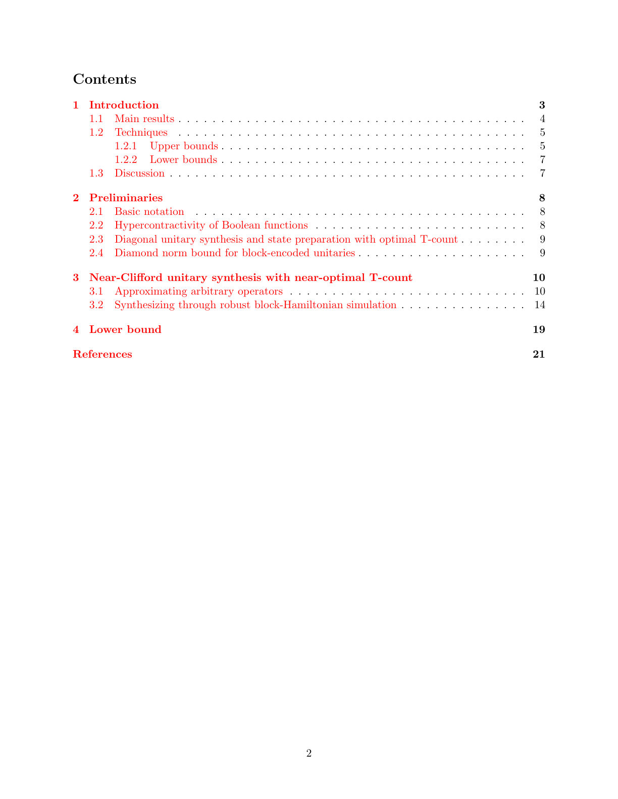
<figcaption class="paper-figure-caption"><b>Fig 1.</b> Low-resolution page preview, page 2</figcaption>
</figure>
<figure class="paper-figure-card">
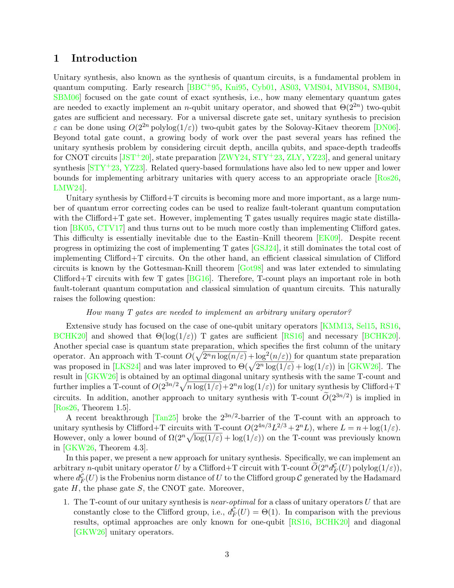
<figcaption class="paper-figure-caption"><b>Fig 2.</b> Low-resolution page preview, page 3</figcaption>
</figure>
<figure class="paper-figure-card">
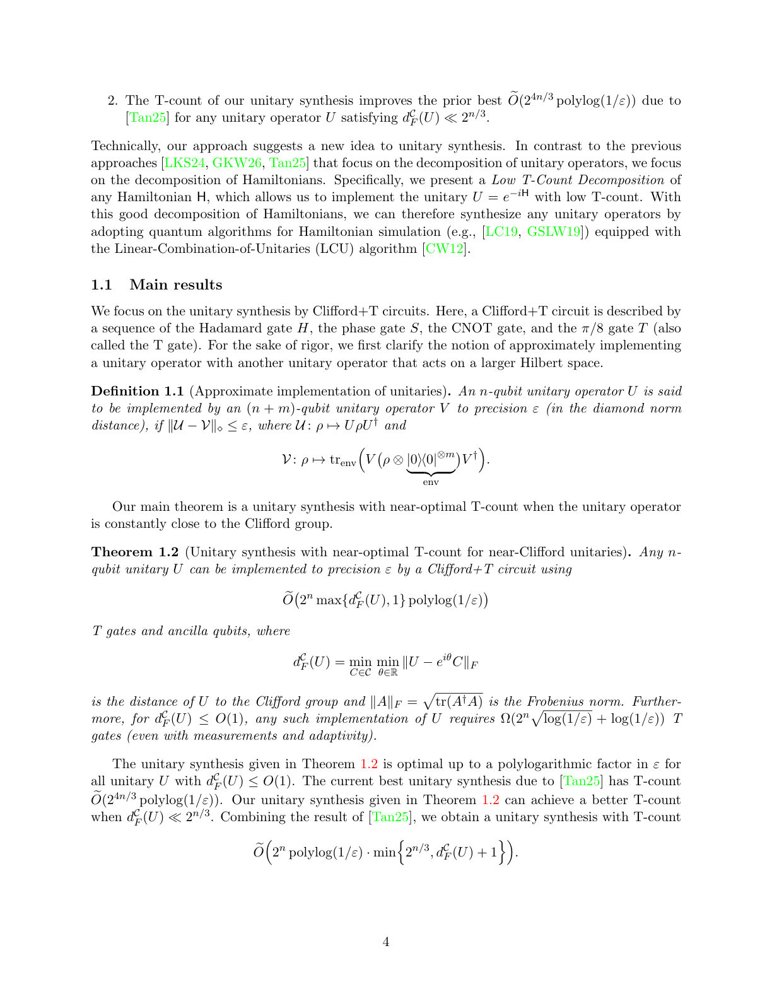
<figcaption class="paper-figure-caption"><b>Fig 3.</b> Low-resolution page preview, page 4</figcaption>
</figure>
<figure class="paper-figure-card">
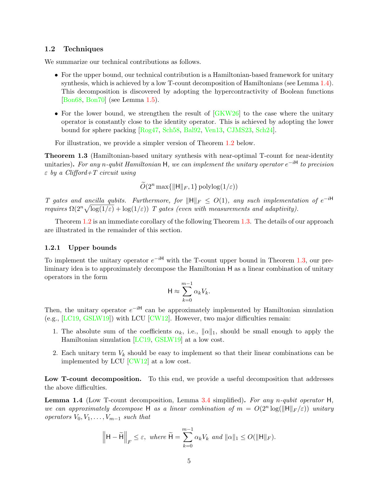
<figcaption class="paper-figure-caption"><b>Fig 4.</b> Low-resolution page preview, page 5</figcaption>
</figure>
<figure class="paper-figure-card">
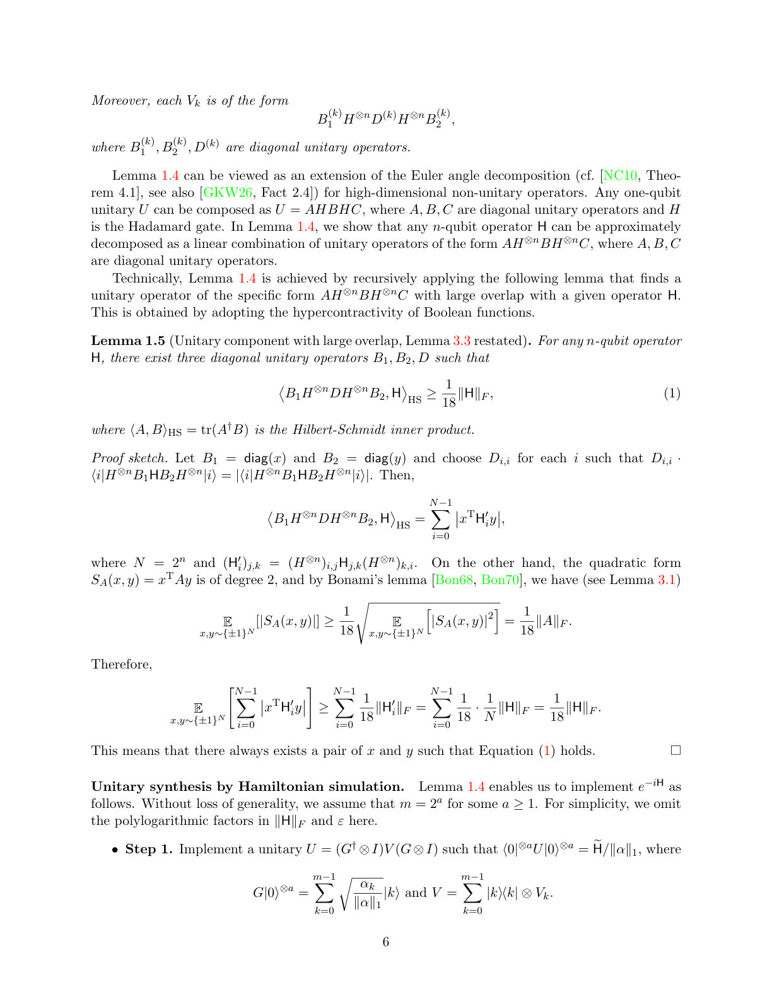
<figcaption class="paper-figure-caption"><b>Fig 5.</b> Low-resolution page preview, page 6</figcaption>
</figure>
</div>
<p><strong>Summary.</strong> This paper presents advanced techniques for synthesizing arbitrary $n$-qubit unitaries using only Clifford and T gates, focusing heavily on minimizing the required T-gate count. By relating the complexity to the unitary's distance from the Clifford group, it establishes new near-optimal upper bounds that improve upon previous state-of-the-art results.</p>
<p><strong>Why it may be interesting.</strong> This work directly addresses resource estimation in quantum computation, which is crucial for designing fault-tolerant algorithms. The focus on near-optimal scaling relative to the deviation from Clifford gates provides a powerful theoretical tool for assessing circuit overhead.</p>
<details>
<summary>Detailed structure</summary>
<p><strong>Main problem.</strong> The core problem is determining the minimum number of T gates required (T-count) to synthesize an arbitrary $n$-qubit unitary operator $U$ using only Clifford+T quantum gates.</p>
<p><strong>Main result.</strong> The authors establish a near-optimal upper bound for the T-count, showing it scales favorably with the Frobenius norm distance of $U$ from the Clifford group ($d_{C_F}(U)$), improving previous bounds significantly when $d_{C_F}(U)$ is small.</p>
<p><strong>Method.</strong> The approach combines Hamiltonian simulation techniques (like QSVT) with a low T-count decomposition derived from leveraging hypercontractivity of Boolean functions to approximate the required unitaries.</p>
<p><strong>Model / system.</strong> The model is quantum computation on $n$ qubits, restricted to using Clifford and T gates. The synthesis targets an arbitrary unitary $U$, often derived from simulating a Hamiltonian $H$.</p>
<p><strong>Key observables.</strong> T-count (the primary resource measure), Frobenius norm distance ($d_{C_F}(U)$), and approximation error ($\epsilon$).</p>
<p><strong>Important parameters / regimes.</strong> $n$ (number of qubits), $\epsilon$ (precision parameter), and $d_{C_F}(U)$ (measure of non-Clifford character).</p>
<p><strong>Assumptions / limitations.</strong> The analysis relies on the ability to implement linear combinations of unitaries (LCU) and utilizes hypercontractivity results for decomposition.</p>
<p><strong>Paper structure.</strong> The paper develops from general synthesis bounds to a Hamiltonian-based framework, detailing the low T-count decomposition of the Hamiltonian $H$ into linear combinations of unitaries ($V_k$), and finally deriving complexity bounds for both unitary and Hamiltonian synthesis.</p>
</details>
<details>
<summary>Abstract</summary>
<p>We present an approach to unitary synthesis that implements an arbitrary $n$-qubit unitary operator $U$ by a Clifford+T circuit with T-count $\widetilde{O}(2^n d_F^{\mathcal{C}}(U))$, where $d_F^{\mathcal{C}}(U)$ is the Frobenius norm distance of $U$ to the Clifford group. The T-count is shown to be near-optimal when $d_F^{\mathcal{C}}(U)$ is a constant. Our approach improves the previous best upper bound $\widetilde{O}(2^{4n/3})$ due to Tan (2025) for a large class of unitary operators $U$ as long as $d_F^{\mathcal{C}}(U) \ll 2^{n/3}$.</p>
</details>
<p><sub><a href="#top">↑ back to top</a></sub></p>

<p><a id="paper-2607.12780"></a></p>
<h3 id="when-close-enough-is-not-enough-autoregressive-drift-in-quantum-circuit-synthesis"><a href="http://arxiv.org/abs/2607.12780v1">When Close Enough Is Not Enough: Autoregressive Drift in Quantum Circuit Synthesis</a></h3>
<p><strong>Authors:</strong> Mehdi Saeedi, Eddie Richter, Paul Hartke<br>
<strong>Type:</strong> theory · <strong>Category:</strong> quantum information and computing · <strong>PDF:</strong> <a href="https://arxiv.org/pdf/2607.12780v1">https://arxiv.org/pdf/2607.12780v1</a><br>
<strong>Analysis basis:</strong> full PDF text, analyzed in chunks</p>
<div class="figure-strip-hint">↔ Scroll figures horizontally</div>
<div class="paper-figures-scroll">
<figure class="paper-figure-card">
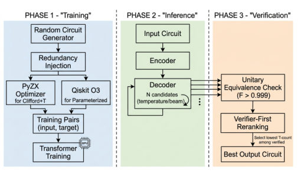
<figcaption class="paper-figure-caption"><b>Fig 1.</b> Fig. 1. End-to-end pipeline. Training pairs are generated using PyZX (Clifford+T) or Qiskit O3 (parameterized). At inference, N candidates are decoded and verified against the input unitary; the verifier selects the lowest- T-count equivalent circuit.</figcaption>
</figure>
<figure class="paper-figure-card">
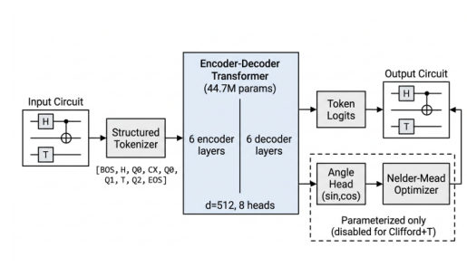
<figcaption class="paper-figure-caption"><b>Fig 2.</b> Fig. 2. Model architecture. The encoder-decoder transformer produces token logits for circuit structure. For parameterized circuits, a separate angle head predicts (sin, cos) pairs refined by Nelder-Mead optimization; this branch is disabled for Clifford+T.</figcaption>
</figure>
<figure class="paper-figure-card">
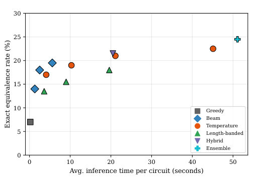
<figcaption class="paper-figure-caption"><b>Fig 3.</b> Fig. 3. Quality–latency Pareto frontier for Clifford+T optimization. Each point represents a (strategy, candidate budget) configuration evaluated on 200 test samples. Inference-time compute scaling monotonically improves exact equivalence for temperature sampling.</figcaption>
</figure>
<figure class="paper-figure-card">
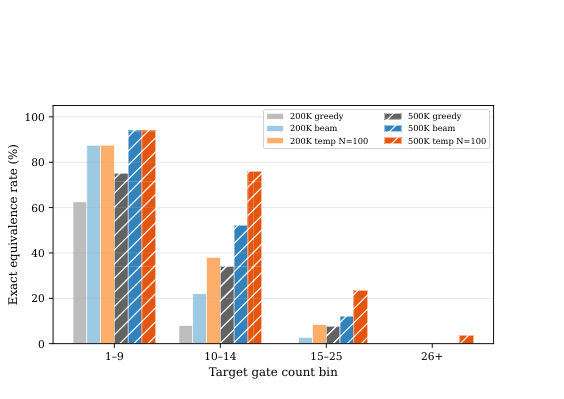
<figcaption class="paper-figure-caption"><b>Fig 4.</b> Fig. 4. Exact equivalence rate by target gate-count bin for both the 200K baseline (lighter bars) and 500K model (darker, hatched bars). Data scaling improves all length bins substantially, but the degradation pattern persists: performance drops sharply with target length across all configurations.</figcaption>
</figure>
<figure class="paper-figure-card">
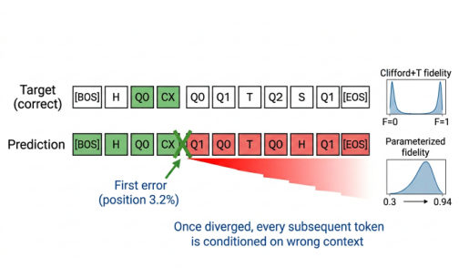
<figcaption class="paper-figure-caption"><b>Fig 5.</b> Fig. 5. Autoregressive drift illustrated. The model matches the first few tokens (green) but diverges early (red X), after which every subsequent token is conditioned on wrong context. The Clifford+T fidelity distribution is bimodal (F ≈0 or F ≈1), whereas parameterized fidelity is smooth and recoverable via angle post-processing.</figcaption>
</figure>
</div>
<p><strong>Summary.</strong> This paper investigates using transformer models for optimizing quantum circuits by minimizing T-gate count. The authors find that while the AI excels at approximate synthesis, it fundamentally fails when exact gate sequence correctness is required due to 'autoregressive drift.' This limitation shows that simple scaling of data or advanced search methods cannot overcome this inherent sequential decoding flaw.</p>
<p><strong>Why it may be interesting.</strong> Although focused on quantum computation, the analysis of model failure modes—specifically how sequential generation breaks down under strict discrete constraints—provides insights relevant to any complex physical simulation or state preparation process where cumulative error is critical.</p>
<details>
<summary>Detailed structure</summary>
<p><strong>Main problem.</strong> The core problem is optimizing quantum circuits for fault-tolerant computation by achieving exact functional equivalence while minimizing expensive non-Clifford resources like T gates.</p>
<p><strong>Main result.</strong> While the transformer model succeeds when post-processing can rescue approximate outputs, its reliance on autoregressive decoding causes an irreversible failure (drift) when exact discrete correctness is required, especially for longer circuits.</p>
<p><strong>Method.</strong> The authors use a structured encoder-decoder transformer trained to map input quantum circuits to equivalent, optimized output sequences of Clifford+T gates.</p>
<p><strong>Model / system.</strong> The system involves synthesizing quantum circuits on 3-6 qubits using the Clifford+T gate set. The model is a compact transformer architecture utilizing structured tokenization for circuit representation.</p>
<p><strong>Key observables.</strong> Process fidelity (exact equivalence), T-count reduction, and the rate of exact match success as a function of target circuit length.</p>
<p><strong>Important parameters / regimes.</strong> The failure exhibits strong dependence on target circuit length; performance degrades sharply from high accuracy on short circuits to near zero for longer ones.</p>
<p><strong>Assumptions / limitations.</strong> The central assumption tested is that autoregressive generation must maintain perfect discrete correctness, which the model fails to do beyond a certain circuit depth due to drift.</p>
<p><strong>Figures summary.</strong> Notes imply figures comparing success rates across different search strategies (greedy vs. beam search) and showing the sharp drop-off in exact equivalence as target length increases.</p>
<p><strong>Paper structure.</strong> The paper contrasts two regimes: parameterized circuits (where classical optimization rescues approximate errors) versus discrete Clifford+T circuits (where exactness is mandatory). It then systematically tests mitigation strategies like inference-time searching and data scaling against the persistent failure mode of autoregressive drift.</p>
</details>
<details>
<summary>Abstract</summary>
<p>Quantum circuit optimization for fault-tolerant computing requires exact functional equivalence while minimizing expensive non-Clifford resources such as T gates. We study this problem using a compact 44.8M-parameter encoder-decoder transformer with structured circuit tokenization, evaluating on parameterized circuits (2-6 qubits) and Clifford+T circuits (3-6 qubits). On parameterized circuits, a hybrid approach -- structure from the transformer, angles from classical optimization -- achieves median fidelity 1.000 on 3-6 qubit circuits. On Clifford+T circuits, where all gates are discrete and no post-processing is possible, the model learns valid syntax and accurate T-Count statistics, yet exact equivalence degrades sharply with target length -- from 88% on circuits with &lt;=9 gates to near zero beyond 26 gates.   We trace this failure to autoregressive drift: early-token divergence cascading irrecoverably through left-to-right decoding. Two levers partially mitigate the drift: inference-time strategies that generate multiple candidates and select via equivalence verification raise exact-match rates from 7% to 22.5%, while scaling training data by 2.5x pushes them to 39.5%. Yet the degradation with target length persists -- even with more data, exact equivalence drops from 94% on short circuits to under 4% beyond 26 gates.   The contrast between settings is our central finding: when approximate outputs can be rescued by post-processing, the transformer succeeds; when exact discrete correctness is required, autoregressive drift limits reliability, with both inference-time search and data scaling as effective levers while training-side fine-tuning and model-level diversification are not.</p>
</details>
<p><sub><a href="#top">↑ back to top</a></sub></p>
</details>
<h2 id="secondary-cond-mat-archives">Secondary cond-mat archives</h2>
<p><em>Papers from cond-mat.mtrl-sci, mes-hall, other, soft, supr-con. These archives are de-prioritized — they appear at the end regardless of relevance score.</em></p>
<h3 id="relevant-in-secondary-archives-16">Relevant in secondary archives (16)</h3>

<p><a id="paper-2607.12720"></a></p>
<h3 id="geometric-spin-orbit-coupling-resolves-the-contradictory-ciss-effect-in-chiral-single-molecules"><a href="http://arxiv.org/abs/2607.12720v1">Geometric Spin-Orbit Coupling Resolves the Contradictory CISS Effect in Chiral Single Molecules</a></h3>
<p><strong>Authors:</strong> Shu-Zheng Zhou, Xi Sun, Kai-Yuan Zhang, Hua-Hua Fu<br>
<strong>Type:</strong> theory · <strong>Category:</strong> other · <strong>PDF:</strong> <a href="https://arxiv.org/pdf/2607.12720v1">https://arxiv.org/pdf/2607.12720v1</a><br>
<strong>Analysis basis:</strong> full PDF text, analyzed in chunks
<strong>Topic relevance:</strong> 🔥 <code>methods for driven-dissipative</code> <strong>4/5</strong> · <code>exotic spin models in light-matter</code> <strong>3/5</strong> · <code>spintronics-quantum-optics interface</code> <strong>3/5</strong> · <code>Kondo &amp; dissipative impurity</code> <strong>2/5</strong> · <code>non-equilibrium dynamics</code> <strong>2/5</strong> · <code>Keldysh / 2PI / non-Gaussian methods</code> <strong>1/5</strong> · <code>analog quantum simulation</code> <strong>1/5</strong> · <code>correlated / nonlocal dissipation</code> <strong>1/5</strong> · <code>driven-dissipative phase transition</code> <strong>1/5</strong></p>
<div class="figure-strip-hint">↔ Scroll figures horizontally</div>
<div class="paper-figures-scroll">
<figure class="paper-figure-card">
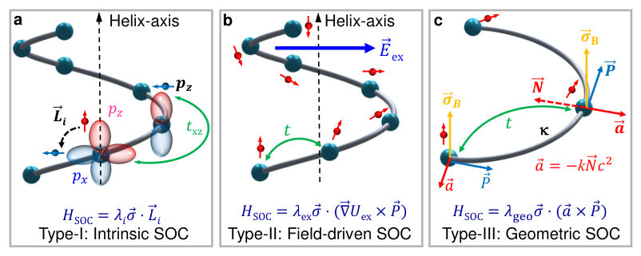
<figcaption class="paper-figure-caption"><b>Fig 1.</b> Figure 1. Three SOC mechanisms that can be used to explain the generation of spin polarization. (a) Type-I: Atomic intrinsic SOC between different P-orbital components (e.g., Px, Py, Pz). (b) Type-II: Effective field-driven SOC from the electrons moving along the chiral paths, equivalent to an external electric field ⃗Eex=-∇U applied to the system. (c) Type-III: Geometric SOC due to the relativistic effect for electrons moving on curved paths.</figcaption>
</figure>
<figure class="paper-figure-card">
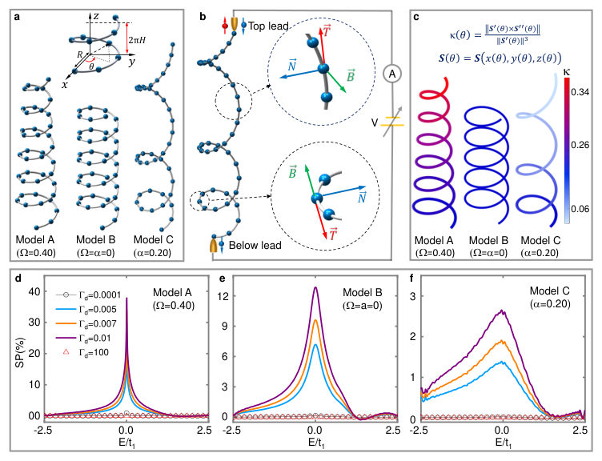
<figcaption class="paper-figure-caption"><b>Fig 2.</b> Figure 2. Spin polarization for three chiral chain geometries along with the transport device configuration, local coordinate vectors and spatial curvature. (a) Three representative single-chiral chain geometries: cone-shaped (Model A), uniform (Model B), and progressive-pitch (Model C). (b) Transport device based on Model C, coupled to two nonmagnetic electrodes. The local tangent (⃗Ti), normal ( ⃗Ni) and binormal ( ⃗Bi) vectors are shown in red, green and magenta, respectively. (c) Spatial variation of the curvature κ in the three helix models. d-f Spin polarization versus energy E for Model A (Ω=0.4), Model B (Ω=α=0), and Model C (α=0.20).</figcaption>
</figure>
<figure class="paper-figure-card">
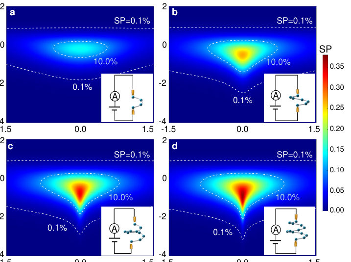
<figcaption class="paper-figure-caption"><b>Fig 3.</b> Figure 3. Phase diagram of spin polarization versus the decoherence strength log10(Γd/t1) and the energy E for four types of chiral molecular junctions based on a half-turn (a), a full-turn (b), a one-and-a-half-turn (c), and a two-turn helix (d). Three contour lines for SP=1.0%, 10.0% and 20.0% are plotted.</figcaption>
</figure>
<figure class="paper-figure-card">
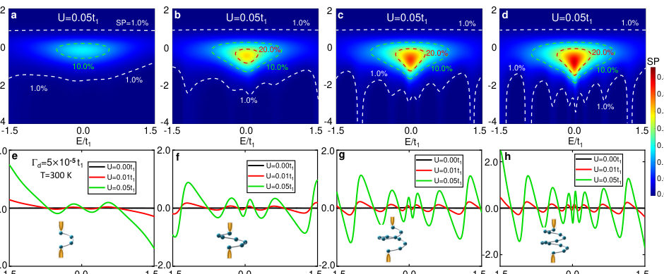
<figcaption class="paper-figure-caption"><b>Fig 4.</b> Figure 4. Phase diagram of spin polarization and the maximum SP under electron-electron correction. (a)-(d) Phase diagrams of SP for four CSM-based junctions as functions of decoherence strength log10(Γd/t1) and onsite energy E, calculated at U=0.05t1. Contour lines are shown for SP=1.0%, 10.0% and 20.0%. (e)-(h) Maximum SP (SPmax) for the same four junctions as a function of E, for Hubbard U = 0, 0.01, and 0.05t1. The decoherence strength and temperature are fixed at Γd=5.0×10−4t1 and 300 K, respectively.</figcaption>
</figure>
<figure class="paper-figure-card">
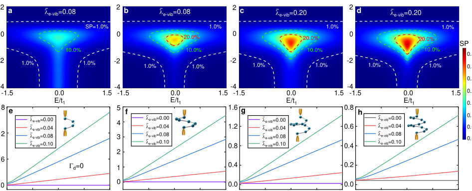
<figcaption class="paper-figure-caption"><b>Fig 5.</b> Figure 5. Phase diagrams of spin polarization and maximum SP under electron-vibration coupling. (a)-(d) Phase diagrams of SP for four CSM-based junctions as functions of log10(Γd/t1) and onsite energy E, calculated with electron-vibration coupling (˜λe−vib=0.08 or 0.20 t1 · nm) and without electron-electron correlation (U=0). Contour lines are shown for SP=1.0%, 10.0%, and 20.0%. (e)-(h) Maximum SP (SPmax) as a function of temperature for the same four junctions, for ˜λe−vib=0, 0.04, 0.08, and 0.1 (in unit of t1 · nm).</figcaption>
</figure>
</div>

<p><strong>Summary.</strong> This theoretical work resolves contradictions in CISS measurements by introducing geometric spin-orbit coupling into the analysis. The framework predicts that measurable spin polarization only occurs within an intermediate regime of environmental decoherence. It provides a unified understanding of CISS across various chiral molecular structures.</p>
<p><strong>Why it may be interesting.</strong> The explicit modeling of spin transport in nanoscale molecular junctions using geometric SOC and decoherence provides a rich platform for studying open quantum systems dynamics, particularly how environmental coupling dictates observable quantum effects like spin polarization.</p>
<details>
<summary>Detailed structure</summary>
<p><strong>Main problem.</strong> The paper aims to resolve conflicting experimental reports regarding the Chirality-Induced Spin Selectivity (CISS) effect in chiral single molecules.</p>
<p><strong>Main result.</strong> It shows that CISS is suppressed in both strong-coherence and strong-decoherence regimes, becoming pronounced only in an intermediate decoherence regime. The mechanism unifies observations by incorporating geometric spin-orbit coupling.</p>
<p><strong>Method.</strong> The authors developed a theoretical framework using tight-binding models to incorporate geometric SOC and environmental decoherence into the Hamiltonian.</p>
<p><strong>Model / system.</strong> The system involves chiral single molecules modeled as helical chains (e.g., cone-shaped, uniform helix). The theory incorporates molecular Hamiltonians augmented by geometric SOC terms and environmental decoherence via a master equation approach.</p>
<p><strong>Key observables.</strong> Spin Polarization (SP), which is calculated using the Landauer-Büttiker formalism; $   ext{SP}_{\max}$ dependence on temperature and coupling strengths.</p>
<p><strong>Important parameters / regimes.</strong> Decoherence strength ($\Gamma_d$), electron-vibration coupling constant ($    ilde{\lambda}_{ ext{e-vib}}$), and molecular geometry parameters (radius, pitch).</p>
<p><strong>Assumptions / limitations.</strong> The primary assumption is that geometric SOC provides the necessary theoretical extension beyond traditional intrinsic or field-driven SOC models to explain CISS.</p>
<p><strong>Figures summary.</strong> Figures illustrate three types of SOC mechanisms; one shows SP for different molecular geometries across varying parameters; another presents phase diagrams mapping observable CISS to intermediate decoherence regimes.</p>
<p><strong>Paper structure.</strong> The paper first establishes the conflict in experimental data, then develops a theoretical framework incorporating geometric SOC and decoherence. It systematically calculates SP for various chiral models (A, B, C) under different coupling conditions ($   ext{e-vib}$, $  ext{e-e}$), concluding with generalized phase diagrams.</p>
</details>
<details>
<summary>Abstract</summary>
<p>Some studies have reported clear chirality-induced spin selectivity (CISS) effect in four classes of chiral single molecules with remarkable spin polarization. In contrast, a recent high-precision measurement involving nearly a thousand individual tests failed to detect significant CISS signals in the same molecular systems (J. Am. Chem. Soc. 2025, \textbf{147}, 25043). These conflicting results cast doubt on whether CISS truly occurs in these chiral systems at the single-molecular level. To resolve this discrepancy, we develop a theoretical framework incorporating geometric spin-orbit coupling and environmental decoherence, enabling systematic study of the CISS in four chiral single molecules with distinct geometries and sizes. Our calculations show that the CISS effect is completely suppressed in both strong-coherence and strong-decoherence regimes, but becomes pronounced in the intermediate-decoherence regime, where observable spin polarization emerges. In the strong-coherence regime, both electron-electron interaction and electron-vibration coupling enhance the CISS effect: the former is more effective in large molecules, whereas the latter plays a more significant role in smaller ones. Increasing temperature further enhances spin polarization. The proposed mechanism unifies contradictory experimental observations and reveals how the CISS effect evolves from regular helical (helical symmetric) to irregular helical (point-symmetric or axially symmetric) chirality. This framework thus provides a basis for unifying CISS phenomena across single-molecule systems, regardless of their specific molecular configurations or symmetry classes.</p>
</details>
<p><sub><a href="#top">↑ back to top</a></sub></p>

<p><a id="paper-2607.12394"></a></p>
<h3 id="systematic-modulation-of-superconducting-gap-dynamics-in-ybcobntybco-josephson-junctions-through-thz-field-interaction-and-bnt-ferroelectric-barrier"><a href="http://arxiv.org/abs/2607.12394v1">Systematic modulation of superconducting gap dynamics in YBCO|BNT|YBCO Josephson Junctions through THz field interaction and BNT ferroelectric barrier</a></h3>
<p><strong>Authors:</strong> Sukhanidhan Singh, Muthukkumaran Karthikeyan, Geoffrey Chanda, Thanayut Kaewmaraya, Pairot Moontragoon, Guoxing Sun, Zongjin Li, Anucha Watcharapasorn<br>
<strong>Type:</strong> both · <strong>Category:</strong> strongly correlated electrons · <strong>PDF:</strong> <a href="https://arxiv.org/pdf/2607.12394v1">https://arxiv.org/pdf/2607.12394v1</a><br>
<strong>Analysis basis:</strong> full PDF text, analyzed in chunks
<strong>Topic relevance:</strong> <code>interference shaping light</code> <strong>3/5</strong> · <code>quantum optics experiment</code> <strong>3/5</strong> · <code>spintronics-quantum-optics interface</code> <strong>3/5</strong> · <code>QC/QI experiment</code> <strong>2/5</strong> · <code>driven-dissipative phase transition</code> <strong>2/5</strong> · <code>methods for driven-dissipative</code> <strong>2/5</strong> · <code>non-equilibrium dynamics</code> <strong>2/5</strong> · <code>Keldysh / 2PI / non-Gaussian methods</code> <strong>1/5</strong> · <code>Kondo &amp; dissipative impurity</code> <strong>1/5</strong> · <code>analog quantum simulation</code> <strong>1/5</strong> · <code>correlated / nonlocal dissipation</code> <strong>1/5</strong> · <code>exotic spin models in light-matter</code> <strong>1/5</strong> · <code>non-equilibrium universality</code> <strong>1/5</strong></p>
<div class="figure-strip-hint">↔ Scroll figures horizontally</div>
<div class="paper-figures-scroll">
<figure class="paper-figure-card">
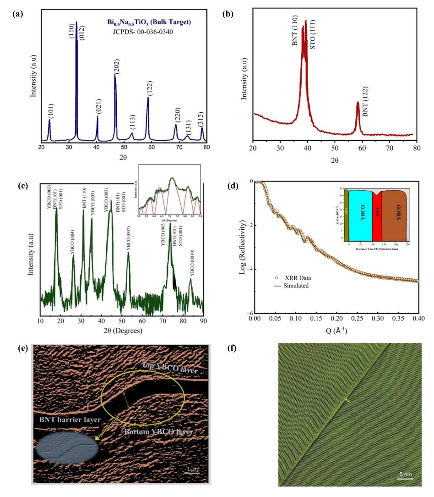
<figcaption class="paper-figure-caption"><b>Fig 1.</b> Figure 1: (a) XRD patterns of the BNT bulk target, (b) XRD pattern of the BNT thin film on an</figcaption>
</figure>
<figure class="paper-figure-card">
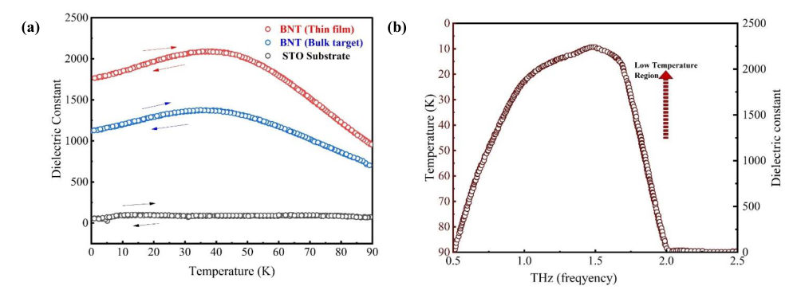
<figcaption class="paper-figure-caption"><b>Fig 2.</b> Figure 2: (a) Temperature dependence of the dielectric constant for BNT thin films, bulk, and STO</figcaption>
</figure>
<figure class="paper-figure-card">

<figcaption class="paper-figure-caption"><b>Fig 3.</b> Figure 2(a) illustrates the temperature dependence of the dielectric constant for BNT thin films,</figcaption>
</figure>
<figure class="paper-figure-card">
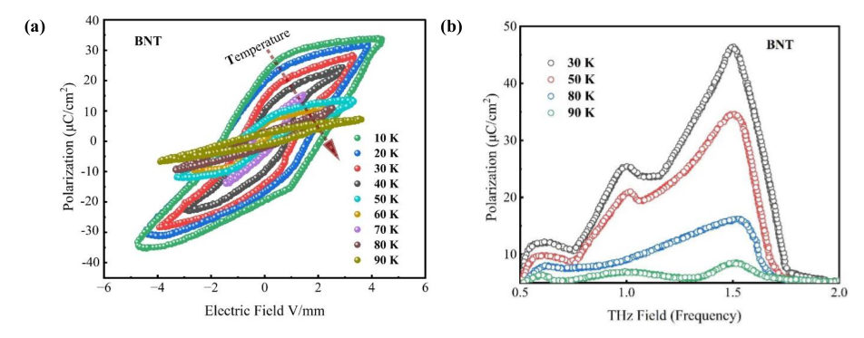
<figcaption class="paper-figure-caption"><b>Fig 4.</b> Figure 3: (a) Polarization-electric field (P-E) hysteresis loops of BNT measured at temperatures</figcaption>
</figure>
<figure class="paper-figure-card">
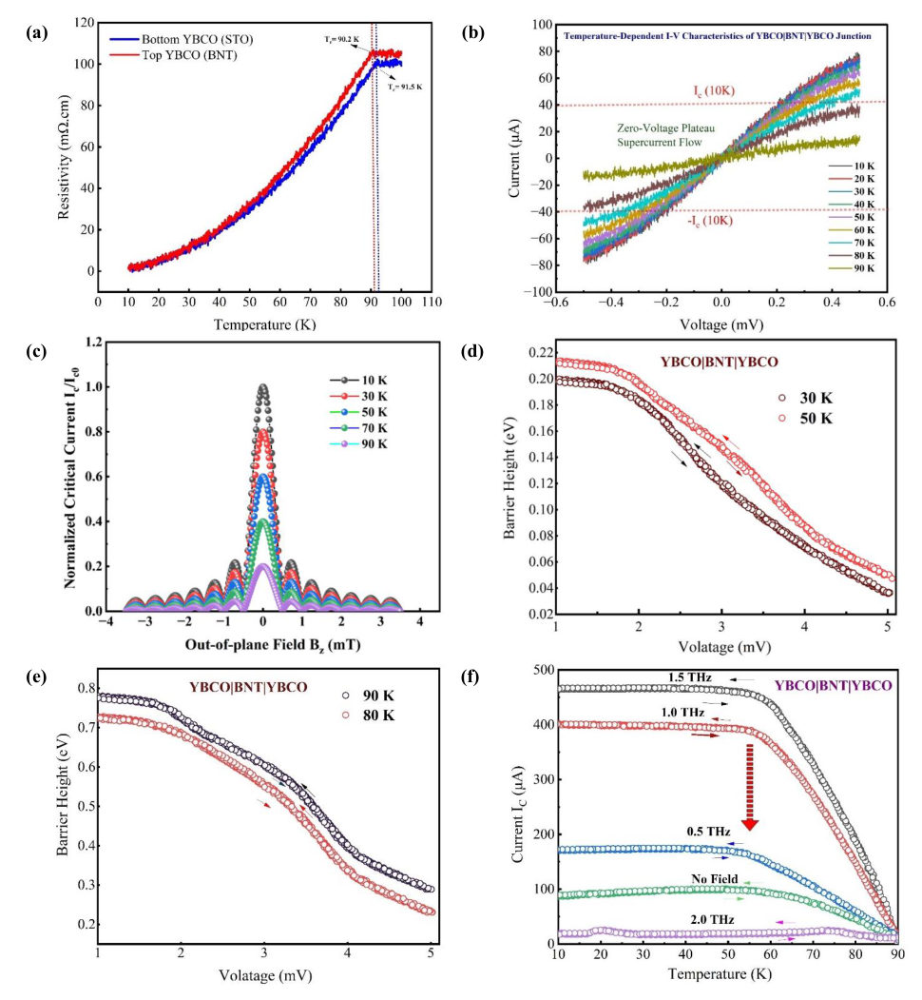
<figcaption class="paper-figure-caption"><b>Fig 5.</b> Figure 4: (a) Temperature-dependent resistivity (ρ-T) behavior of the bottom and top YBCO layers</figcaption>
</figure>
</div>

<p><strong>Summary.</strong> This research demonstrates that ferroelectric BNT barriers can be used to create Josephson junctions whose superconducting properties are dynamically controlled by external Terahertz (THz) radiation. By coupling THz fields to the BNT polarization, researchers successfully modulated both the critical current and the superconducting energy gap in YBCO/BNT/YBCO structures. This establishes a pathway for building next-generation, light-controlled superconducting quantum devices.</p>
<p><strong>Why it may be interesting.</strong> This work directly bridges condensed matter physics (superconductivity, high-Tc cuprates) with quantum optics and materials science (ferroelectrics, THz response). The ability to use an external electromagnetic field to tune a fundamental quantum parameter like the superconducting gap is highly relevant for developing tunable quantum devices.</p>
<details>
<summary>Detailed structure</summary>
<p><strong>Main problem.</strong> The study aims to systematically modulate superconducting gap dynamics in YBCO|BNT|YBCO Josephson Junctions by utilizing the interaction between external Terahertz (THz) fields and the ferroelectric polarization of the BNT barrier.</p>
<p><strong>Main result.</strong> The research demonstrates that THz irradiation can dynamically enhance the critical current ($I_c$) and increase the superconducting gap ($\Delta$), confirming that the Josephson coupling is intrinsically controlled by the tunable, dipolar response of the ferroelectric BNT barrier.</p>
<p><strong>Method.</strong> A combination of epitaxial thin-film deposition (PLD) to create high-quality trilayers, electrical transport measurements ($I$-$V$, $dI/dV$) under THz excitation, and theoretical modeling using a modified Josephson junction Hamiltonian was employed.</p>
<p><strong>Model / system.</strong> The physical system is the YBCO|BNT|YBCO Josephson Junction. The dynamics are modeled by incorporating a time-dependent modulation term ($\mathcal{H}_{mod}$) into the standard Josephson Hamiltonian, where this modulation arises from the THz-induced polarization ($P_{THz}(t)$) within the BNT ferroelectric barrier.</p>
<p><strong>Key observables.</strong> Superconducting gap ($\Delta$), critical current ($I_c$) under THz excitation, BNT polarization ($P$), and Fraunhofer interference patterns in $I_c(B)$.</p>
<p><strong>Important parameters / regimes.</strong> THz frequency (0.5-2.5 THz), ferroelectric polarization magnitude ($33.4 	o 46.4 \mu	ext{C}/	ext{cm}^2$), and superconducting gap values ($\Delta = 1.3 	ext{ meV}$ vs $1.05 	ext{ meV}$).</p>
<p><strong>Assumptions / limitations.</strong> The coupling mechanism is assumed to be dominated by the dipolar interaction between the THz field/polarization and the junction capacitance, leading to a time-dependent barrier potential.</p>
<p><strong>Figures summary.</strong> Figures illustrate structural characterization (XRD/XRR) confirming high epitaxial quality; energy diagrams show how the external THz field introduces an additional gap ($E_g$) into the Josephson coupling energy ($  ext{E}_{    ext{J}}$); and spectroscopic plots detail the modulation of $\Delta$ and $I_c$.</p>
<p><strong>Paper structure.</strong> The paper follows a structure moving from system definition (YBCO/BNT/YBCO stack) to theoretical modeling incorporating THz interaction, followed by detailed experimental characterization (structural confirmation via XRR/XRD, electrical measurements under THz), culminating in the demonstration of dynamic control over superconducting parameters.</p>
</details>
<details>
<summary>Abstract</summary>
<p>The integration of ferroelectric barriers into high-temperature Josephson junctions offers a pathway to tunable superconducting quantum devices. Here, we demonstrate robust Josephson coupling in YBa2Cu3O7-x (YBCO)/Bi0.5Na0.5TiO3 (BNT)/YBCO trilayer junctions incorporating a 40 nm ferroelectric BNT barrier. Epitaxial trilayers were fabricated by pulsed laser deposition on SrTiO3 substrates and investigated under broadband terahertz (THz) irradiation (0.5-2.5 THz). At 1.5 THz, close to the Josephson plasma resonance, the BNT polarization increased from 33.4 to 46.4 uC/cm2 at 30 K, enhancing superconducting transport. The junctions exhibited a well-defined zero-voltage supercurrent branch, with the critical current Ic(T) remaining nearly constant up to 60 K and reaching 468.2 uA under 1.5 THz excitation, evidencing strong phase coherence. Scanning tunneling spectroscopy revealed an enhanced superconducting gap in YBCO/BNT/YBCO (Delta = 1.3 meV) compared with pure YBCO (Delta = 1.05 meV), while optical conductivity measurements showed a reduction in conductivity and gap with increasing temperature, consistent with BCS theory under THz excitation. Atomic force microscopy and X-ray reflectivity confirmed uniform morphology and sharp interfaces, excluding defect-mediated transport. Magnetic field modulation of Ic(B) exhibited a canonical Fraunhofer interference pattern, and resistance mapping revealed alternating lobes of high and low dissipation, indicating coherent Josephson tunneling. These results establish that Josephson coupling is intrinsic to the YBCO/BNT/YBCO junctions, enabled by the dipolar character and dynamic THz response of the BNT barrier. This study identifies BNT as a viable, tunable barrier material for next-generation high-Tc superconducting quantum devices.</p>
</details>
<p><sub><a href="#top">↑ back to top</a></sub></p>

<p><a id="paper-2607.12741"></a></p>
<h3 id="dynamical-generation-of-rectified-electric-current"><a href="http://arxiv.org/abs/2607.12741v1">Dynamical Generation of Rectified Electric Current</a></h3>
<p><strong>Authors:</strong> Jin-Xin Hu, Congjun Wu<br>
<strong>Type:</strong> theory · <strong>Category:</strong> other · <strong>PDF:</strong> <a href="https://arxiv.org/pdf/2607.12741v1">https://arxiv.org/pdf/2607.12741v1</a><br>
<strong>Analysis basis:</strong> full PDF text, analyzed in chunks
<strong>Topic relevance:</strong> <code>analog quantum simulation</code> <strong>3/5</strong> · <code>exotic spin models in light-matter</code> <strong>3/5</strong> · <code>non-equilibrium dynamics</code> <strong>3/5</strong> · <code>spintronics-quantum-optics interface</code> <strong>3/5</strong> · <code>Keldysh / 2PI / non-Gaussian methods</code> <strong>2/5</strong> · <code>driven-dissipative phase transition</code> <strong>2/5</strong> · <code>methods for driven-dissipative</code> <strong>1/5</strong> · <code>non-equilibrium universality</code> <strong>1/5</strong></p>
<div class="figure-strip-hint">↔ Scroll figures horizontally</div>
<div class="paper-figures-scroll">
<figure class="paper-figure-card">
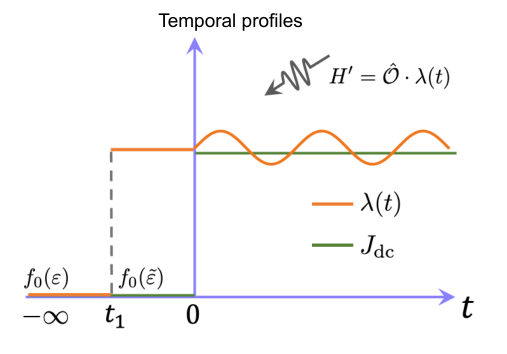
<figcaption class="paper-figure-caption"><b>Fig 1.</b> FIG. 1. Schematic illustration of rectified current generation by a dynamical drive λ(t) coupled to a local operator ˆO. At times t &lt; 0, the system is in equilibrium. The drive is adia- batically turned on during the interval −∞&lt; t &lt; t1, reaching a finite amplitude with zero frequency for t1 &lt; t &lt; 0. While a static component of the drive would merely redistribute carri- ers, leading to a modified steady-state distribution, the finite frequency Ωat t &gt; 0 enables the generation of a rectified DC current Jdc.</figcaption>
</figure>
<figure class="paper-figure-card">
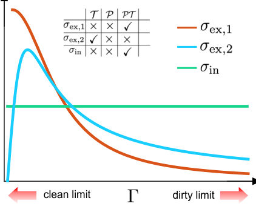
<figcaption class="paper-figure-caption"><b>Fig 2.</b> FIG. 2. Schematic depiction of the extrinsic (σex,1 and σex,2) and intrinsic (σin) DC current and their symmetry properties. Γ denotes the scattering rate, making σex,1 term dominate and suppressing σex,2 in the clean limit. However, the intrinsic one is disorder free and may dominate gradually in the dirty limit.</figcaption>
</figure>
<figure class="paper-figure-card">
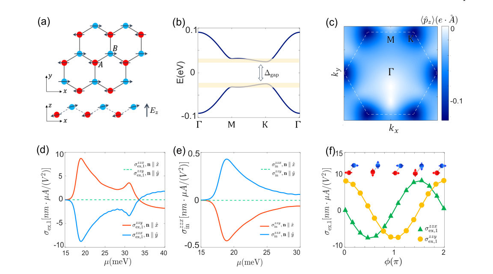
<figcaption class="paper-figure-caption"><b>Fig 3.</b> FIG. 3. (a) Schematic illustration of the buckled honeycomb lattice with N´eel order. In the side view, the two sublattice atoms (A and B) form a vertical dipole moment that couples to an out-of-plane electric field Ez. (b) Band structure along the high-symmetry lines, featuring a band gap of ∼50 meV. (c) Momentum-space distribution of the vertical dipole moment ⟨ˆpz⟩ for the valence band. (d) and (e) Calculated σex,1 and σin as functions of Fermi energy µ. (f) Angular dependence of σex,1 at µ = 18 meV on the N´eel vector direction; the evolution of the spin texture on the A and B sublattices is also depicted. Parameters used: t = 30 meV, λR = 0.1t, Jex = 0.3t, and temperature T = 5 K.</figcaption>
</figure>
</div>

<p><strong>Summary.</strong> This paper develops a general theory for how an oscillating external field can induce a steady, rectified electric current in a periodic system, even if the static case forbids it. The resulting DC current is shown to have both extrinsic (impurity-related) and intrinsic (Berry curvature-derived) origins. By applying this framework to magnetic materials, the authors propose that this effect can act as a novel electrical probe for detecting specific types of magnetic ordering.</p>
<p><strong>Why it may be interesting.</strong> The concept of generating DC currents from AC drives via nonlinear coupling is central to understanding non-equilibrium quantum transport. The explicit connection between this effect and measurable magnetic orders makes it highly relevant for condensed matter theorists studying emergent phenomena in frustrated magnets.</p>
<details>
<summary>Detailed structure</summary>
<p><strong>Main problem.</strong> The work addresses the nonlinear transport phenomenon of electric current rectification, converting an alternating external drive into a steady direct current (DC) even when static theory forbids it.</p>
<p><strong>Main result.</strong> A general theoretical framework is established showing that this rectified DC current arises from two distinct contributions: impurity scattering and a dynamical mixed Berry curvature. This effect can serve as a sensitive electrical probe for magnetic order, such as Néel ordering in antiferromagnets.</p>
<p><strong>Method.</strong> The analysis uses a semiclassical approach, expanding the system's response to the time-varying drive ($\lambda(t)$) up to second order in the drive amplitude to isolate the DC component. The theory decomposes the current into extrinsic (scattering-dependent) and intrinsic (Berry curvature-derived) parts.</p>
<p><strong>Model / system.</strong> The general model involves Bloch electrons in a periodic system driven by an external oscillating field coupling to an arbitrary operator $\hat{O}$. A specific application is studied using a tight-binding Hamiltonian for a buckled magnetic lattice subjected to an out-of-plane oscillating electric field.</p>
<p><strong>Key observables.</strong> Rectified DC current ($J_{dc}$), which is proportional to the product of two drive amplitudes ($\lambda_a\lambda_b$), and its components $\sigma_{	ext{abc}}^{	ext{ex}}$ (extrinsic) and $\sigma_{	ext{abc}}^{	ext{in}}$ (intrinsic).</p>
<p><strong>Important parameters / regimes.</strong> The driving frequency ($\Omega$) relative to the optical transition gap ($\Delta_{	ext{gap}}$), and the scattering rate ($\Gamma$). The DC current persists even when $\hbar\Omega \ll \Delta_{	ext{gap}}$.</p>
<p><strong>Assumptions / limitations.</strong> The analysis relies on the semiclassical framework, utilizing the relaxation-time approximation for the distribution function. Some derivations employ a time-dependent Schrieffer-Wolff transformation.</p>
<p><strong>Figures summary.</strong> Figure 1 illustrates the generation of $J_{dc}$ from an oscillating drive. Figure 2 shows the scaling behavior of different conductivity components ($\sigma_{	ext{ex,1}}$, $\sigma_{	ext{ex,2}}$, $\sigma_{	ext{in}}$) across various frequency regimes relative to the scattering rate. Figure 3 depicts the physical realization in a buckled honeycomb lattice.</p>
<p><strong>Paper structure.</strong> The paper develops a general theory for rectification, derives the current components ($\sigma^{	ext{ex}}, \sigma^{	ext{in}}$), analyzes their frequency dependence and symmetry constraints (P, T, PT), and concludes with a specific application to magnetic systems to probe Néel order.</p>
</details>
<details>
<summary>Abstract</summary>
<p>Rectification is a fundamental nonlinear transport process that converts an alternating drive into a direct current. In this work, we propose a general theoretical framework for electric current rectification triggered by a dynamical external drive that couples to an arbitrary well-defined operator of a periodic system, and which in the static limit forbids any steady current. In the dynamical regime, the finite frequency $Ω$ of the time-varying drive breaks time-translation invariance and injects energy into the system, enabling a second-order {\it nonlinear rectified} current that has no static counterpart. This rectification process has two distinct origins: (i) an impurity-scattering-modified distribution function at finite frequency, and (ii) a time-domain anomalous velocity stemming from a dynamical mixed Berry curvature. Both contributions persist when the driving frequency lies well below the optical transition gap. Applying our general theory to a buckled magnetic system subject to an out-of-plane oscillating electric field, we characterize the generated current as a {\it nonlinear magnetoelectric gyrotropic effect} and predict that the induced rectified current is sensitive to the magnetic order, thereby offering a feasible electrical probe of Néel order in non-coplanar antiferromagnets.</p>
</details>
<p><sub><a href="#top">↑ back to top</a></sub></p>

<p><a id="paper-2607.12347"></a></p>
<h3 id="domain-wall-motion-in-ferromagnetic-nanowires-driven-by-a-localized-gaussian-thermal-gradient"><a href="http://arxiv.org/abs/2607.12347v1">Domain wall motion in ferromagnetic nanowires driven by a localized Gaussian thermal gradient</a></h3>
<p><strong>Authors:</strong> M. A. Jafar Pikul, M. A. S. Akanda, M. T. Islam<br>
<strong>Type:</strong> theory · <strong>Category:</strong> other · <strong>PDF:</strong> <a href="https://arxiv.org/pdf/2607.12347v1">https://arxiv.org/pdf/2607.12347v1</a><br>
<strong>Analysis basis:</strong> full PDF text, analyzed in chunks
<strong>Topic relevance:</strong> <code>methods for driven-dissipative</code> <strong>3/5</strong> · <code>spintronics-quantum-optics interface</code> <strong>3/5</strong> · <code>driven-dissipative phase transition</code> <strong>2/5</strong> · <code>non-equilibrium dynamics</code> <strong>2/5</strong> · <code>Keldysh / 2PI / non-Gaussian methods</code> <strong>1/5</strong> · <code>analog quantum simulation</code> <strong>1/5</strong> · <code>correlated / nonlocal dissipation</code> <strong>1/5</strong> · <code>exotic spin models in light-matter</code> <strong>1/5</strong> · <code>non-equilibrium universality</code> <strong>1/5</strong></p>
<div class="figure-strip-hint">↔ Scroll figures horizontally</div>
<div class="paper-figures-scroll">
<figure class="paper-figure-card">
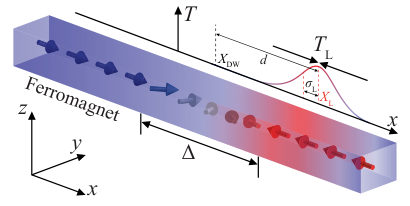
<figcaption class="paper-figure-caption"><b>Fig 1.</b> FIG. 1. Schematic of the Permalloy nanowire with length 1024 nm and cross-section 8 × 8 nm2, containing a head-to- head domain wall (DW) at the center. The red curve repre- sents the localized Gaussian temperature profile, which peaks at the laser position XL. The laser spot is located at a dis- tance d = NσL to the right of the initial DW position XDW, where σL is the laser width. Blue and red coloring indicate the colder and hotter regions, respectively. The DW width ∆ and the laser to DW distance d are also indicated.</figcaption>
</figure>
<figure class="paper-figure-card">
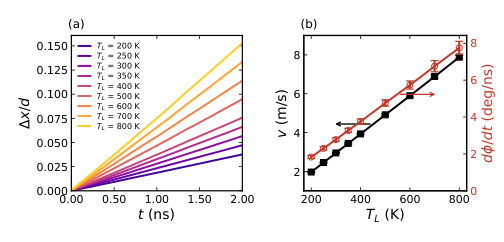
<figcaption class="paper-figure-caption"><b>Fig 2.</b> FIG. 2. Effect of laser temperature on DW dynamics for fixed N = 7 (d = 105 nm), σL = 15 nm, α = 0.001, and Ku = 2×105 J m−3. (a) Normalized DW displacement ∆x/d as a function of time for TL = 200, 250, 300, 350, 400, 500, 600, 700, and 800 K. The DW moves toward the hotter region for all temperatures, and the displacement increases with TL. (b) Translational velocity v (filled black squares) and angu- lar velocity dϕ/dt (open red circles) as functions of TL. Both quantities increase linearly with laser temperature. Error bars represent one standard deviation over 15 independent simu- lations.</figcaption>
</figure>
<figure class="paper-figure-card">
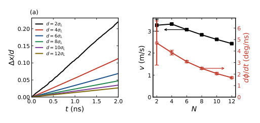
<figcaption class="paper-figure-caption"><b>Fig 3.</b> FIG. 3. Dependence of DW dynamics on laser to DW dis- tance for fixed TL = 300 K, σL = 15 nm, and α = 0.001. (a) Normalized displacement ∆x/d versus time for N = 2, 4, 6, 8, 10, 12, where d = NσL. (b) Translational velocity v (filled black squares) and angular velocity dϕ/dt (open red circles) versus N. Both quantities decrease with increasing N because the magnon current weakens as it travels farther from the laser spot to the DW.</figcaption>
</figure>
<figure class="paper-figure-card">
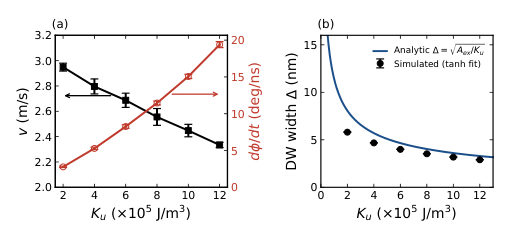
<figcaption class="paper-figure-caption"><b>Fig 4.</b> FIG. 5. Uniaxial anisotropy study for fixed TL = 300 K, N = 7, σL = 15 nm, and α = 0.001. (a) Translational veloc- ity v (filled black squares) and angular velocity dϕ/dt (open red circles) plotted against Ku. As Ku increases, v decreases while dϕ/dt increases. (b) DW width ∆plotted against Ku. Filled black circles represent values extracted from tanh fits to the simulated magnetization profiles, and the blue curve represents the analytic prediction, ∆= p</figcaption>
</figure>
<figure class="paper-figure-card">

<figcaption class="paper-figure-caption"><b>Fig 5.</b> FIG. 4. Damping dependence of DW dynamics in the sub- Walker regime for fixed TL = 300 K, N = 7, σL = 15 nm, and Ku = 2 × 105 J m−3. Translational velocity v (filled black squares) and angular velocity dϕ/dt (open red circles) are plotted as functions of α (×10−3). The velocity reaches a broad maximum near α ≈0.002–0.003 and then levels off, while dϕ/dt decreases after reaching its maximum near α ≈0.002. This behavior reflects the competition between magnon generation and magnon propagation.</figcaption>
</figure>
</div>

<p><strong>Summary.</strong> This work models domain wall motion in ferromagnetic nanowires driven by localized laser heating. The simulations show that the DW velocity scales linearly with temperature but is attenuated by distance due to magnon current decay. Key findings establish that both the laser spot size and the separation distance act as independent control parameters for thermal spintronics devices.</p>
<p><strong>Why it may be interesting.</strong> While focused on magnetism, the use of stochastic equations (sLLG) to model thermal fluctuations and non-equilibrium dynamics in a spatially varying field provides relevant computational techniques applicable to open quantum systems or dissipative many-body physics.</p>
<details>
<summary>Detailed structure</summary>
<p><strong>Main problem.</strong> The study investigates how magnetic domain wall (DW) motion is driven by a localized Gaussian thermal gradient generated by a focused laser spot.</p>
<p><strong>Main result.</strong> The DW velocity increases linearly with peak laser temperature and decreases as the distance from the heat source increases due to magnon current attenuation. The dynamics are controlled independently by both the laser width and the separation distance.</p>
<p><strong>Method.</strong> Micromagnetic simulations utilizing the stochastic Landau-Lifshitz-Gilbert (sLLG) equation were employed to model the time evolution of magnetization.</p>
<p><strong>Model / system.</strong> The system is a uniaxial ferromagnetic nanowire containing a head-to-head DW. The dynamics are governed by the sLLG equation under the influence of a localized Gaussian temperature profile, with motion primarily driven by magnonic spin-transfer torque ($\mu$STT).</p>
<p><strong>Key observables.</strong> Translational velocity ($v$), angular velocity ($\mathrm{d}\phi/\mathrm{dt}$), and DW displacement ($\Delta x/d$).</p>
<p><strong>Important parameters / regimes.</strong> Peak laser temperature ($T_L$), laser to DW distance ($d = N\sigma_L$), Gilbert damping ($\alpha$), uniaxial anisotropy ($K_u$), and laser width ($\sigma_L$).</p>
<p><strong>Assumptions / limitations.</strong> The entropic torque is negligible because the initial DW position has an effectively zero local temperature gradient, simplifying the driving mechanism to $\mu$STT.</p>
<p><strong>Figures summary.</strong> Figures illustrate the linear dependence of velocity on $T_L$, the decay of velocity with increasing separation distance ($N$), and non-monotonic dependencies on damping ($\alpha$) and anisotropy ($K_u$).</p>
<p><strong>Paper structure.</strong> The analysis systematically varies key physical parameters—$T_L$, distance, $\alpha$, $K_u$, and $\sigma_L$—to map out the functional dependence of DW velocity and angular dynamics.</p>
</details>
<details>
<summary>Abstract</summary>
<p>We investigate magnetic domain wall (DW) dynamics in a uniaxial ferromagnetic nanowire under the localized Gaussian temperature profile of a laser spot using the stochastic Landau-Lifshitz-Gilbert equation. The DW velocity increases linearly with peak laser temperature and decreases with increasing laser to DW distance. The velocity varies nonlinearly with Gilbert damping because damping strengthens thermal magnon excitation but shortens the magnon propagation length. The DW initially lies away from the laser-heated region, so the temperature gradient at its position is effectively zero and the entropic torque is negligible. The DW motion is therefore mainly driven by magnonic spin-transfer torque. We analyze laser temperature, laser to DW distance, damping, uniaxial anisotropy, and laser width. The analysis shows that laser width and laser to DW distance independently control the DW response. These findings may clarify the mechanism of localized thermally driven DW motion and guide thermal control strategies in spintronic racetrack-memory devices.</p>
</details>
<p><sub><a href="#top">↑ back to top</a></sub></p>

<p><a id="paper-2607.12819"></a></p>
<h3 id="what-is-the-real-time-atomistic-mechanism-behind-chirality-induced-spin-selectivity-in-donor-chiral-bridge-acceptor-molecules"><a href="http://arxiv.org/abs/2607.12819v1">What Is the Real-Time Atomistic Mechanism Behind Chirality-Induced Spin Selectivity in Donor-Chiral Bridge-Acceptor Molecules?</a></h3>
<p><strong>Authors:</strong> Shu-Zheng Zhou, Xi Sun, Kai-Yuan Zhang, Hua-Hua Fu<br>
<strong>Type:</strong> theory · <strong>Category:</strong> other · <strong>PDF:</strong> <a href="https://arxiv.org/pdf/2607.12819v1">https://arxiv.org/pdf/2607.12819v1</a><br>
<strong>Analysis basis:</strong> full PDF text, analyzed in chunks
<strong>Topic relevance:</strong> <code>exotic spin models in light-matter</code> <strong>3/5</strong> · <code>spintronics-quantum-optics interface</code> <strong>3/5</strong> · <code>methods for driven-dissipative</code> <strong>2/5</strong> · <code>non-equilibrium dynamics</code> <strong>2/5</strong> · <code>Keldysh / 2PI / non-Gaussian methods</code> <strong>1/5</strong> · <code>correlated / nonlocal dissipation</code> <strong>1/5</strong> · <code>driven-dissipative phase transition</code> <strong>1/5</strong></p>
<div class="figure-strip-hint">↔ Scroll figures horizontally</div>
<div class="paper-figures-scroll">
<figure class="paper-figure-card">

<figcaption class="paper-figure-caption"><b>Fig 1.</b> Figure 1. Molecular geometry of the donor–chiral bridge–acceptor system and the generation of geometric SOC within the chiral bridge. A Molecular structures of the PXX-(S,R)NMI2–NDI enantiomers, the achiral NMI-bridged analogue is also shown for reference. B Two representative transport pathways through the chiral bridge and the discretized geometric SOC at each atomic site. The vectors ⃗N, ⃗B, and ⃗T denote the normal, binormal, and tangent directions in the Frenet–Serret frame; ⃗a and ⃗p are the electron acceleration and momentum; κ is the local curvature of the pathway. C Decomposition of the effective geometric SOC components along the three orthogonal axes for the left (NMIL) and right...</figcaption>
</figure>
<figure class="paper-figure-card">

<figcaption class="paper-figure-caption"><b>Fig 2.</b> Figure 2. Time and spatial evolution of charge densities and spin polarizations in the donor–chiral bridge–acceptor system. (A) Time-dependent charge densities on the donor (D), the left bridge unit NMIL (adjacent to D), the right bridge unit NMIR (adjacent to the acceptor A), and the acceptor itself. (B-D) Time evolution of the three orthogonal spin-polarization components SPx, SPy, and SPz on the acceptor for the (S) and (R) enantiomers and the achiral reference. (E) Spatial distribution of charge densities and the three spin-polarization components across all atomic sites of the chiral-bridge (S)NMI2 and the acceptor at two representative times, t1 and t2. (F) Corresponding spatial...</figcaption>
</figure>
<figure class="paper-figure-card">

<figcaption class="paper-figure-caption"><b>Fig 3.</b> Figure 3. Geometric regulation of spin polarization by chiral bridge dimer conformation. (A) Definition of the three geometric param- eters of the right NMIR unit relative to the left NMIL unit: dihedral angle α about the chiral axis, in-plane twist β, and folding angle γ; the corresponding rotational axes are indicated. (B) Dependence of the three spin-polarization components SPx, SPy, and SPz on the dihedral an- gle α for the PXX-NMI2-DNI system. (C) Evolution of the three polarization components with the in-plane twist angle β for the enantiomeric pair at α=±70◦. (D) Variation of the three spin-polarization components on the acceptor A as a function of the folding angle γ.</figcaption>
</figure>
<figure class="paper-figure-card">

<figcaption class="paper-figure-caption"><b>Fig 4.</b> Figure 4. Triplet-state evolution and the equivalence between population polarization and vector spin polarization in donor–chiral bridge–acceptor molecules. (A-C)) Comparison of singlet and triplet population evolution for electron transfer through an axially chiral bridge, an achiral bridge, and a one-dimensional helical-chain structure. (D) Schematic illustration of the composition and calculation of the total population polarization. (E-G) Time evolution of the singlet–triplet coherence polarization, triplet population polarization, total population polarization, and the corresponding vector-spin polarization along the three orthogonal directions for the chiral PXX–(S)NMI2–DNI molecule....</figcaption>
</figure>
</div>

<p><strong>Summary.</strong> This paper reveals that the real-time spin polarization in chiral molecules like D-Bχ-A systems originates primarily from a geometric spin-orbit coupling ($   ext{SOC}_{  ext{geo}}$). By modeling electron transport along the molecule's twisted bridge, the authors show this mechanism generates strong, measurable spin polarizations that match experimental data. This provides a general theoretical blueprint for designing chiral spintronic devices.</p>
<p><strong>Why it may be interesting.</strong> This work provides a highly detailed, first-principles theoretical mechanism for CISS that moves beyond simple models. The explicit derivation of geometric SOC from molecular curvature is crucial for designing next-generation chiral spintronic materials.</p>
<details>
<summary>Detailed structure</summary>
<p><strong>Main problem.</strong> The primary goal is to elucidate the real-time, atomistic mechanism responsible for Chirality-Induced Spin Selectivity (CISS) in Donor-Chiral Bridge-Acceptor (D-Bχ-A) molecules.</p>
<p><strong>Main result.</strong> The study proposes that a geometric spin-orbit coupling ($ ext{SOC}_{  ext{geo}}$), arising from the curvature of electron transport along the chiral bridge, is the dominant mechanism generating observable high spin polarizations. This framework successfully accounts for both axial and transverse polarization components observed in experiments.</p>
<p><strong>Method.</strong> The authors developed and utilized a quantum dynamical model incorporating time-dependent charge-state populations and explicitly calculating geometric SOC derived from the Frenet–Serret frame along the twisted molecular pathway.</p>
<p><strong>Model / system.</strong> The system studied is the D-Bχ-A molecule, focusing on binaphthyl-type chiral bridge dimers. The theoretical framework involves deriving a Hamiltonian that includes $  ext{SOC}_{  ext{geo}}$ and analyzing spin dynamics using quantum master equations or density matrix propagation.</p>
<p><strong>Key observables.</strong> Spin polarization components ($    ext{SP}_x,  ext{SP}_y,  ext{SP}_z$), the magnitude of geometric SOC (predicted to be $1-2$ orders of magnitude larger than intrinsic coupling), and population/coherence polarizations.</p>
<p><strong>Important parameters / regimes.</strong> The relative magnitudes of polarization components ($\sim 30\%–40\%$ for CISS contribution) and the ratio $\lambda/t_0 \approx 0.64$ defining the SOC energy scale are key parameters.</p>
<p><strong>Assumptions / limitations.</strong> The analysis assumes that the geometric SOC mechanism provides a self-consistent picture, allowing polarization to be understood without relying solely on conventional radical-pair mechanisms (RPM).</p>
<p><strong>Figures summary.</strong> Figures illustrate molecular geometries and transport pathways, detailing how the geometric SOC is decomposed along orthogonal axes ($x, y, z$) across different enantiomers.</p>
<p><strong>Paper structure.</strong> The paper progresses by first identifying the mechanistic gap in CISS understanding. It then develops a quantum dynamical model incorporating $    ext{SOC}_{  ext{geo}}$ derived from molecular geometry (Frenet–Serret frame). Finally, it calculates and compares resulting spin polarization components against time-resolved electron paramagnetic resonance measurements.</p>
</details>
<details>
<summary>Abstract</summary>
<p>Chiral-induced spin selectivity (CISS) has been experimentally observed in photo-excited donor-chiral bridge-acceptor (D-Bχ-A) molecules [Science 382, 197-201 (2023)]. However, the microscopic mechanism underlying CISS in such chiral systems remains elusive. Here we develop a quantum dynamical model that precisely maps the atomic structure of binaphthyl-type bridge dimers in isolated D-Bχ-A molecules and introduce a geometric spin-orbit coupling (SOC) mechanism to unveil the intrinsic origin of CISS in axially chiral systems. During photo-excited electron transport along the twisted pathways, the geometric SOC coupling strength exceeds the intrinsic coupling of light atoms by one to two orders of magnitude, readily producing observable high spin polarizations. The resulting spin polarization comprises two components: the CISS-associated polarizations along and perpendicular to the chiral axis are intrinsic to axial chirality, requiring neither external fields nor spin-superexchange transfer, while a non-Abelian curvature correction provides a rigorous mathematical definition of the chiral axis direction. Our calculated polarization components, chirality dependence, and relative magnitudes (30-40\%) quantitatively match time-resolved electron paramagnetic resonance measurements. This geometric SOC framework offers a self-consistent and general physical picture of CISS in axially chiral molecules and provides explicit theoretical guidance for the design of chiral spintronic devices.</p>
</details>
<p><sub><a href="#top">↑ back to top</a></sub></p>

<p><a id="paper-2607.12320"></a></p>
<h3 id="quantum-anomalous-hall-effect-with-tunable-chern-numbers-induced-by-d-wave-sublattice-staggered-altermagnetism"><a href="http://arxiv.org/abs/2607.12320v1">Quantum anomalous Hall effect with tunable Chern numbers induced by d-wave sublattice-staggered altermagnetism</a></h3>
<p><strong>Authors:</strong> Lizhou Liu, Qing-Feng Sun<br>
<strong>Type:</strong> theory · <strong>Category:</strong> other · <strong>PDF:</strong> <a href="https://arxiv.org/pdf/2607.12320v1">https://arxiv.org/pdf/2607.12320v1</a><br>
<strong>Analysis basis:</strong> full PDF text, analyzed in chunks
<strong>Topic relevance:</strong> <code>analog quantum simulation</code> <strong>3/5</strong> · <code>exotic spin models in light-matter</code> <strong>3/5</strong> · <code>driven-dissipative phase transition</code> <strong>2/5</strong> · <code>Keldysh / 2PI / non-Gaussian methods</code> <strong>1/5</strong> · <code>methods for driven-dissipative</code> <strong>1/5</strong> · <code>spintronics-quantum-optics interface</code> <strong>1/5</strong></p>
<div class="figure-strip-hint">↔ Scroll figures horizontally</div>
<div class="paper-figures-scroll">
<figure class="paper-figure-card">

<figcaption class="paper-figure-caption"><b>Fig 1.</b> Fig. 1. Schematic diagram of the square lattice model consisting of two sublattices, A (red) and B (blue). The green arrows</figcaption>
</figure>
<figure class="paper-figure-card">

<figcaption class="paper-figure-caption"><b>Fig 2.</b> Fig. 2. Energy band structures for different parameter settings. The high-symmetry path is chosen as Γ–M–X–Γ–Y–M.</figcaption>
</figure>
<figure class="paper-figure-card">

<figcaption class="paper-figure-caption"><b>Fig 3.</b> Fig. 3. Phase diagrams in the J–µ plane. The color map shows the bulk gap magnitude, and the labeled regions indicate the</figcaption>
</figure>
<figure class="paper-figure-card">

<figcaption class="paper-figure-caption"><b>Fig 4.</b> Fig. 4. (a),(b) Ribbon band structures under open boundary conditions along the y direction for anisotropic hopping</figcaption>
</figure>
</div>

<p><strong>Summary.</strong> This theoretical work proposes that Quantum Anomalous Hall Effect can be engineered in compensated magnets by utilizing a d-wave sublattice-staggered altermagnetic interaction. By tuning parameters like the staggered potential and lattice anisotropy, the model predicts the realization of multiple quantized Chern number states ($C=\pm 1, \pm 2$). This provides a simple, magnetically driven route to topological quantum phenomena.</p>
<p><strong>Why it may be interesting.</strong> While focused on condensed matter topology, the concept of engineering robust quantum states using internal symmetries (like altermagnetism) is highly relevant to designing novel platforms for quantum simulation or topological quantum computing elements.</p>
<details>
<summary>Detailed structure</summary>
<p><strong>Main problem.</strong> The primary goal is realizing the Quantum Anomalous Hall Effect (QAHE) in compensated magnetic systems without applying external magnetic fields.</p>
<p><strong>Main result.</strong> The authors demonstrate that a d-wave sublattice-staggered altermagnetism can induce tunable QAHE phases, allowing for Chern numbers $C=\pm 1$ and $C=\pm 2$.</p>
<p><strong>Method.</strong> The study employs theoretical modeling using a minimal spinful tight-binding Hamiltonian on a square lattice to calculate topological invariants.</p>
<p><strong>Model / system.</strong> The system is modeled by a spinful tight-binding model on a square lattice, driven into QAHE by adding a d-wave sublattice-staggered altermagnetic exchange term. The physics relies on the interplay between this magnetic coupling and structural anisotropies.</p>
<p><strong>Key observables.</strong> Tunable Chern numbers ($C$), quantized two-terminal conductance plateaus ($   ext{G} = n \cdot e^2/h$), and chiral edge states visible in ribbon spectra.</p>
<p><strong>Important parameters / regimes.</strong> Altermagnetic strength ($J$), sublattice potential ($\mu$), and hopping anisotropy ($t_x$ vs. $t_y$).</p>
<p><strong>Assumptions / limitations.</strong> The model assumes the existence of a d-wave sublattice-staggered altermagnetism, which breaks time-reversal symmetry but keeps the net magnetization zero.</p>
<p><strong>Figures summary.</strong> Figures illustrate band structures showing topological transitions (e.g., $C=0 	o C=2$ vs. sequential steps), phase diagrams mapping allowed Chern numbers based on parameter tuning, and ribbon spectra confirming gapless edge modes corresponding to quantized conductance plateaus.</p>
<p><strong>Paper structure.</strong> The paper builds the argument by first defining the minimal model Hamiltonian incorporating altermagnetism, then analyzing how varying parameters ($\mu$, $t_x/t_y$) controls the topological phase diagram (Chern number), and finally confirming these predictions via edge state calculations and quantized transport measurements.</p>
</details>
<details>
<summary>Abstract</summary>
<p>We construct a minimal spinful tight-binding model on a square lattice, where a $d$-wave sublattice-staggered altermagnetism drives the quantum anomalous Hall effect. Here the exchange field is staggered between the two sublattices, where it takes opposite signs on $A$ and $B$ described by the Pauli matrix $τ_z$. The resulting insulating phases host tunable Chern numbers $\mathcal{C}=\pm1$ and $\mathcal{C}=\pm2$, controlled by the staggered exchange strength and the sublattice-staggered potential. We determine the complete phase diagram, identify valley-resolved band inversions at the $X$ and $Y$ points in the Brillouin zone, and demonstrate chiral edge states together with quantized two-terminal conductance plateaus. Our work provides a simple route to realizing the quantum anomalous Hall effect in compensated magnets via a $d$-wave sublattice-staggered altermagnetism.</p>
</details>
<p><sub><a href="#top">↑ back to top</a></sub></p>

<p><a id="paper-2607.12102"></a></p>
<h3 id="analytical-and-numerical-solutions-to-the-non-diffusive-stefan-problem"><a href="http://arxiv.org/abs/2607.12102v1">Analytical and numerical solutions to the non-diffusive Stefan problem</a></h3>
<p><strong>Authors:</strong> Matthew Van Ham, Minghan Xu, Samuel Huberman<br>
<strong>Type:</strong> theory · <strong>Category:</strong> statistical mechanics · <strong>PDF:</strong> <a href="https://arxiv.org/pdf/2607.12102v1">https://arxiv.org/pdf/2607.12102v1</a><br>
<strong>Analysis basis:</strong> full PDF text, analyzed in chunks
<strong>Topic relevance:</strong> <code>non-equilibrium dynamics</code> <strong>3/5</strong> · <code>non-equilibrium universality</code> <strong>2/5</strong> · <code>Keldysh / 2PI / non-Gaussian methods</code> <strong>1/5</strong> · <code>analog quantum simulation</code> <strong>1/5</strong> · <code>correlated / nonlocal dissipation</code> <strong>1/5</strong> · <code>driven-dissipative phase transition</code> <strong>1/5</strong> · <code>methods for driven-dissipative</code> <strong>1/5</strong></p>
<div class="figure-strip-hint">↔ Scroll figures horizontally</div>
<div class="paper-figures-scroll">
<figure class="paper-figure-card">

<figcaption class="paper-figure-caption"><b>Fig 1.</b> Figure 1: Comparison of Hyperbolic and Parabolic solutions to the classical 1D Stefan problem.</figcaption>
</figure>
<figure class="paper-figure-card">

<figcaption class="paper-figure-caption"><b>Fig 2.</b> Figure 2: Dimensionless interface position versus dimensionless time for (a) different mesh sizes</figcaption>
</figure>
<figure class="paper-figure-card">

<figcaption class="paper-figure-caption"><b>Fig 3.</b> Figure 3: Dimensionless Temperature vs. Dimensionless Position for MacCormack–TVD and</figcaption>
</figure>
<figure class="paper-figure-card">

<figcaption class="paper-figure-caption"><b>Fig 4.</b> Figure 4: Numerical verification of composite and non-Fourier solution profiles for diffusive Stefan</figcaption>
</figure>
<figure class="paper-figure-card">

<figcaption class="paper-figure-caption"><b>Fig 5.</b> Figure 5: Dimensionless Interface Position vs. Dimensionless Time for Different Stefan Numbers</figcaption>
</figure>
</div>

<p><strong>Summary.</strong> This paper tackles the complex Stefan problem using advanced heat transfer models (MCV equation) that account for hyperbolic, non-diffusive effects. It employs perturbation theory and matched asymptotic expansions to derive accurate solutions by combining inner and outer approximations. The results clarify how early-time transient behavior is governed by these hyperbolic terms, which increases model error under certain parameter regimes.</p>
<p><strong>Why it may be interesting.</strong> While focused on classical thermodynamics, the mathematical techniques—such as developing matched asymptotic expansions for hyperbolic PDEs with singular initial conditions—are highly relevant to modeling non-equilibrium dynamics in quantum systems or open quantum systems where relaxation times are critical.</p>
<details>
<summary>Detailed structure</summary>
<p><strong>Main problem.</strong> The work aims to develop analytical and numerical solutions for the non-diffusive Stefan problem, which models phase change dynamics under non-Fourier heat transfer conditions.</p>
<p><strong>Main result.</strong> The study successfully derives composite solutions by combining inner and outer approximations, showing that hyperbolic effects are pronounced at early times and increase model error when thermal relaxation time or diffusivity is large.</p>
<p><strong>Method.</strong> Perturbation series expansions are used for small Stefan numbers, combined with a matched asymptotic construction involving rescaling time to capture initial transient dynamics.</p>
<p><strong>Model / system.</strong> The physical system is a one-dimensional domain undergoing phase change (freezing/melting) governed by the Maxwell--Cattaneo--Vernotte (MCV) equation, which incorporates hyperbolic heat conduction effects.</p>
<p><strong>Key observables.</strong> Interface profiles ($  ilde{x}_i$ vs $ ilde{t}$), temperature profiles ($ heta$), and model error scaling.</p>
<p><strong>Important parameters / regimes.</strong> Stefan number (Ste), dimensionless thermal relaxation time ($\epsilon	au$), and thermal diffusivity ($\alpha$).</p>
<p><strong>Assumptions / limitations.</strong> The analysis assumes a small Stefan number ($    ext{Ste} \ll 1$) and initially considers diffusive heat transfer at the interface for tractability, though it extends to non-diffusive models.</p>
<p><strong>Figures summary.</strong> Figure 1 compares hyperbolic and parabolic solutions to the classical 1D Stefan problem. Other figures compare dimensionless interface positions and temperature profiles across varying Ste and $\alpha$ values under different interfacial condition assumptions.</p>
<p><strong>Paper structure.</strong> The paper establishes the governing equations (MCV, Stefan condition), applies perturbation theory for small Ste, develops inner/outer solutions to handle asymptotic divergence, proposes composite solutions, and validates results numerically against known limits.</p>
</details>
<details>
<summary>Abstract</summary>
<p>In this work, the Maxwell--Cattaneo--Vernotte (MCV) equation is used to model the one-dimensional hyperbolic Stefan problem in the limit of a small Stefan number (Ste $\ll$ 1). The solutions are approximated with perturbation series expansions using a reformulation in which time is expressed as a function of the solid-liquid interface position. The first proposed solution is derived in a framework that considers diffusive heat transfer at the phase change interface, for analytic tractability. Two rectification strategies are proposed to address the asymptotic divergence present in this formulation: a rescaled inner solution which is then combined with the outer solution to yield a composite solution, and size-dependent thermo-physical system parameters for better capture of hyperbolic effects at the phase change interface. The resulting interface profiles exhibit a characteristic parabolic-like shape, consistent with diffusive Stefan problem findings, with pronounced early-time hyperbolic effects at larger thermal relaxation times. Parametric studies are done over three pertinent variables in the dimensionless system: the Stefan number ($\mathrm{Ste}$), the dimensionless thermal relaxation time ($\widetilde τ$), and the thermal diffusivity ($α$). The studies suggest that model error scales with the Stefan number in accordance with the theoretical truncation error of the perturbation expansion. Additionally, larger values of $\widetilde τ$ amplify early-time hyperbolic effects, thereby increasing model error, while larger $α$ extends the relative temporal domain over which these hyperbolic effects remain significant, also corresponding to an increase in model error.</p>
</details>
<p><sub><a href="#top">↑ back to top</a></sub></p>

<p><a id="paper-2607.12420"></a></p>
<h3 id="quantized-photocurrents-in-gapless-topological-matter"><a href="http://arxiv.org/abs/2607.12420v1">Quantized Photocurrents in Gapless Topological Matter</a></h3>
<p><strong>Authors:</strong> Byunghoon Kim, Tenzin Norden, Mohammad Yahyavi, Kaustuv Manna, Tyler A. Cochran, Zi-Jia Cheng, Xian P. Yang, Yu-Xiao Jiang, Xiangyu Luo, Payman Kazemikhah, Areeq Hasan, Vladimir N. Strocov, Sergey Shilov, Ilya Belopolski, Claudia Felser, Md Shafayat Hossain, Rohit P. Prasankumar, Guoqing Chang, M. Zahid Hasan, Prashant Padmanabhan<br>
<strong>Type:</strong> both · <strong>Category:</strong> other · <strong>PDF:</strong> <a href="https://arxiv.org/pdf/2607.12420v1">https://arxiv.org/pdf/2607.12420v1</a><br>
<strong>Analysis basis:</strong> full PDF text, analyzed in chunks
<strong>Topic relevance:</strong> <code>analog quantum simulation</code> <strong>3/5</strong> · <code>spintronics-quantum-optics interface</code> <strong>2/5</strong> · <code>driven-dissipative phase transition</code> <strong>1/5</strong> · <code>interference shaping light</code> <strong>1/5</strong> · <code>non-equilibrium dynamics</code> <strong>1/5</strong> · <code>quantum optics experiment</code> <strong>1/5</strong></p>
<div class="figure-strip-hint">↔ Scroll figures horizontally</div>
<div class="paper-figures-scroll">
<figure class="paper-figure-card">

<figcaption class="paper-figure-caption"><b>Fig 1.</b> Figure 1 | Band engineering to isolate a single Berry monopole in Ni-doped RhSi. a, Schematic</figcaption>
</figure>
<figure class="paper-figure-card">

<figcaption class="paper-figure-caption"><b>Fig 2.</b> Figure 2 | Helicity-dependent THz emission from Ni-doped RhSi. a, Schematic of the THz</figcaption>
</figure>
<figure class="paper-figure-card">

<figcaption class="paper-figure-caption"><b>Fig 3.</b> Figure 3 | CPGE spectrum in the monopole-isolated optical window. Wavelength dependence</figcaption>
</figure>
<figure class="paper-figure-card">

<figcaption class="paper-figure-caption"><b>Fig 4.</b> Figure 4 | First-principles assignment of the monopole-selected optical window. a, Calculated</figcaption>
</figure>
</div>

<p><strong>Summary.</strong> The paper reports the observation of a quantized circular photogalvanic effect in the chiral semimetal $   ext{Rh}<em 0.05>{0.95}  ext{Ni}</em>$. By tuning the material via Ni doping, the authors isolate optical transitions originating from a single topological multifold node. This results in a characteristic THz emission plateau whose magnitude quantizes according to the node's topological charge, establishing a novel measurement paradigm for topology in gapless matter.}  ext{Si</p>
<p><strong>Why it may be interesting.</strong> This work provides an all-optical, measurable analogue to topological invariants (like Chern numbers) in a solid-state material using nonlinear optics, which is highly relevant for understanding quantum transport phenomena beyond standard band theory.</p>
<details>
<summary>Detailed structure</summary>
<p><strong>Main problem.</strong> The central challenge is realizing a quantized physical response, analogous to the Quantum Hall Effect (QHE), in gapless topological matter.</p>
<p><strong>Main result.</strong> The authors experimentally observe and theoretically confirm a quantized circular photogalvanic effect plateau in $    ext{Rh}<em 0.05>{0.95}  ext{Ni}</em>$, establishing an all-optical analogue for the QHE.}  ext{Si</p>
<p><strong>Method.</strong> The study combines first-principles calculations of the CPGE tensor ($oldsymbol{eta}(\omega)$) with THz emission spectroscopy using circularly polarized near- to mid-infrared pulses.</p>
<p><strong>Model / system.</strong> The system is a chiral topological semimetal, $ ext{Rh}<em 0.05>{0.95}  ext{Ni}</em>$, which possesses symmetry-protected multifold crossings acting as Berry-curvature monopoles at the $\Gamma$-point.}  ext{Si</p>
<p><strong>Key observables.</strong> Quantized plateau height of the THz emission (calibrated response product $eta	au$), and polarization dependence dominated by the $A_1$ term ($\propto \sin(2\phi)$).</p>
<p><strong>Important parameters / regimes.</strong> The effective monopole charge ($C_{	ext{exp}} \simeq 2.37$) compared to the theoretical integer charge ($C=2$). The optical window is tuned by Ni doping.</p>
<p><strong>Assumptions / limitations.</strong> The analysis assumes that the observed signal is dominated by transitions localized around a single multifold node, which is achieved through chemical tuning (Ni substitution).</p>
<p><strong>Figures summary.</strong> Figures illustrate the confinement of p-polarized THz emission to a spectral window, show the plateau height vs. wavelength matching theory, and confirm the dominance of the $A_1$ polarization component.</p>
<p><strong>Paper structure.</strong> The paper establishes the theoretical link between QHE topology and CPGE in gapless systems; it details how Ni doping isolates a single optical node; experimental THz measurements reveal the quantized plateau signature; and DFT calculations reproduce this quantization by modeling the $\Gamma$-point contribution while suppressing competing $R$-point contributions.</p>
</details>
<details>
<summary>Abstract</summary>
<p>The quantum Hall effect in gapped systems represents a defining signature of nontrivial topology. Realizing this principle in gapless matter has remained a central challenge in quantum materials. Chiral topological semimetals provide a unique platform to achieve this aim via symmetry-protected multifold crossings that act as Berry-curvature monopoles. When optical transitions are confined to a single multifold node, the resulting circular photogalvanic effect is predicted to be quantized in terms of the topological charge of the node. In real materials, however, this phenomenon remains experimentally elusive, obscured by trivial band transitions, the energy separation between the node pairs, and their relative positions with respect to the Fermi level. Here we observe a quantized circular photogalvanic effect in the chiral topological semimetal Rh0.95Ni0.05Si. Ni substitution opens a photon-energy window dominated by interband optical transitions at the Γ-point multifold node. This allows circularly polarized near- to mid-infrared pulses to drive a helicity-odd terahertz response that manifests three hallmarks of quantization: a sharp onset, a wavelength-independent plateau governed by the magnitude of monopole charge, and an abrupt cutoff imposed by Pauli blocking. Our work establishes an all-optical analogue for the quantum Hall effect and a new paradigm for topological quantization in gapless matter.</p>
</details>
<p><sub><a href="#top">↑ back to top</a></sub></p>

<p><a id="paper-2607.12840"></a></p>
<h3 id="reproducible-reservoir-computing-with-thermally-driven-superparamagnets-controlling-temperature-sensitivity"><a href="http://arxiv.org/abs/2607.12840v1">Reproducible Reservoir Computing with Thermally Driven Superparamagnets: Controlling Temperature Sensitivity</a></h3>
<p><strong>Authors:</strong> Zhengfei Chen, Alex Welbourne, Matthew O. A. Ellis, Dan A. Allwood, Eleni Vasilaki, Thomas J. Hayward<br>
<strong>Type:</strong> theory · <strong>Category:</strong> disordered systems and neural networks · <strong>PDF:</strong> <a href="https://arxiv.org/pdf/2607.12840v1">https://arxiv.org/pdf/2607.12840v1</a><br>
<strong>Analysis basis:</strong> full PDF text, analyzed in chunks
<strong>Topic relevance:</strong> <code>spintronics-quantum-optics interface</code> <strong>3/5</strong> · <code>analog quantum simulation</code> <strong>1/5</strong> · <code>correlated / nonlocal dissipation</code> <strong>1/5</strong> · <code>driven-dissipative phase transition</code> <strong>1/5</strong> · <code>exotic spin models in light-matter</code> <strong>1/5</strong> · <code>methods for driven-dissipative</code> <strong>1/5</strong> · <code>non-equilibrium dynamics</code> <strong>1/5</strong></p>
<div class="figure-strip-hint">↔ Scroll figures horizontally</div>
<div class="paper-figures-scroll">
<figure class="paper-figure-card">

<figcaption class="paper-figure-caption"><b>Fig 1.</b> Fig.1. (a) Schematic of a superparamagnetic nanodot ensemble consisting of a PMN-PT substrate onto which CoFeB/Ti dots are patterned. (b) Schematic diagrams illustrating uniform and heterogeneous nanodot ensembles. (c) Schematic representation of the time-multiplexed reservoir computing process for NARMA-10 task. Raw inputs are masked by multiplying with a binary matrix. The masked inputs are transferred into the reservoir along with feedback, where the feedback is the product of the output from each virtual node one time step previously and the feedback strength 𝛾. The output layer is trained via linear regression to minimise loss against the target output of the NARMA-10 task.</figcaption>
</figure>
<figure class="paper-figure-card">

<figcaption class="paper-figure-caption"><b>Fig 2.</b> Fig.2. (a) Schematic illustrating the thermal activation behaviour of single-domain nanodots at two different temperatures. The probability of magnetisation switching is increased at higher temperatures.(b) Transition rates 𝜔 and characteristic timescales 𝜏 of nanodots as a function of temperature in a single 50 nm diameter, 4nm thickness CoFeB nanodot with a field (h=0.4) applied at 90° to the anisotropy axis, as given by Eq.(2) for 𝑓0 = 10−9𝑠, (c) Dynamics of a nanodot ensembles net magnetisation over time in response to an input sequence under different temperatures (6.0°C, 20°C and 35.4°C). Input (Strain-induced anisotropy 𝐾𝜎/ intrinsic anisotropy 𝐾) selected randomly from -0.4 to 0.4....</figcaption>
</figure>
<figure class="paper-figure-card">

<figcaption class="paper-figure-caption"><b>Fig 3.</b> Fig.3. (a) NRMSE and relative error of the reservoir in the NARMA-10 task as a function of temperatures in the range 5 - 35°C. The reservoir exhibits optimal prediction performance at the training temperature, with performance progressively degrading as the temperature deviates from 20°C. (b) The same data plotted over the range 15-26°C. (c) Comparison of the target output and reservoir prediction output at three temperatures. Grey dashed lines indicate the desired output from the NARMA-10 task. Clearly, uniform nanodot reservoir fails to yield reproducible outputs under thermal fluctuations. Introducing geometric heterogeneity is expected to generate a distribution of magnetic switching...</figcaption>
</figure>
<figure class="paper-figure-card">

<figcaption class="paper-figure-caption"><b>Fig 4.</b> Fig.4. (a) Optimization results presented in the objective (minimum NMRSE- average NMRSE) space. Pareto front points are denoted by green stars and labelled sequentially (1,2,3...) for reference, demonstrating an approximately linear trade-off relationship between two competing objectives. Insets are illustrations of No.1 and 7 heterogeneous nanodot reservoirs for illustrating nanodot size variation marked by different colour. For</figcaption>
</figure>
<figure class="paper-figure-card">

<figcaption class="paper-figure-caption"><b>Fig 5.</b> Fig.4(a) shows the solution set obtained after 400 trials, illustrating both the Pareto front and dozens of dominated points. For clarity, the solutions on the Pareto front are sequentially labelled and are referred to by these indices in the following discussion. The front clearly reveals a near-linear trade-off between two objectives: the best minimum NMRSE (NRMSE = 0.557) is attained at average NMRSE = 1.265, whereas the greatest average NMRSE (average NRMSE = 0.720) is achieved with a minimum NMRSE of 0.631. In contrast the equivalent number for the best homogeneous reservoir is 69.861. Collectively these findings support our hypothesis that the heterogeneous reservoir offers better...</figcaption>
</figure>
</div>

<p><strong>Summary.</strong> This paper addresses the critical issue of temperature sensitivity in novel computing substrates based on superparamagnetic nanodots. By simulating and optimizing heterogeneous patterns, the authors demonstrate that geometric disorder can stabilize reservoir performance across wide ambient temperature swings. This work advances the feasibility of using thermally driven spintronic devices for practical edge AI applications.</p>
<p><strong>Why it may be interesting.</strong> The work directly bridges condensed matter physics (superparamagnetism, thermal dynamics) with machine learning hardware design, providing a physical mechanism for mitigating environmental noise in artificial neural networks.</p>
<details>
<summary>Detailed structure</summary>
<p><strong>Main problem.</strong> The primary challenge is developing robust reservoir computing substrates whose performance remains stable despite fluctuations in ambient temperature, a critical issue for real-world deployment.</p>
<p><strong>Main result.</strong> Introducing optimized geometric heterogeneity into superparamagnetic nanodot ensembles successfully stabilizes the reservoir's performance across a wide temperature range (5-35°C) with minimal loss of peak task accuracy.</p>
<p><strong>Method.</strong> The authors employed Multi-Objective Bayesian Optimization (MOBO) to co-optimize both the physical geometry (nanodot size distribution) and the computational hyperparameters ($\gamma$) simultaneously.</p>
<p><strong>Model / system.</strong> The system utilizes superparamagnetic nanodots patterned on a piezoelectric substrate, whose magnetization dynamics are governed by thermal activation effects described by the Néel–Arrhenius law. These ensembles are used as substrates for Reservoir Computing (RC).</p>
<p><strong>Key observables.</strong> Normalized Mean Squared Error (NMRSE) and Relative Error quantifying performance degradation across varying temperatures.</p>
<p><strong>Important parameters / regimes.</strong> Temperature ($T$), feedback strength ($\gamma$), nanodot size distribution (heterogeneity), and characteristic timescales ($   au$).</p>
<p><strong>Assumptions / limitations.</strong> The dynamics are modeled using thermal activation effects, and the system's computational behavior is mapped onto standard RC training/testing procedures.</p>
<p><strong>Figures summary.</strong> Figures illustrate schematics of the physical setup, time-evolution of magnetization at different temperatures, optimization results in a trade-off space (minimum vs. average NMRSE), and performance comparisons between homogeneous and heterogeneous reservoirs across temperature ranges.</p>
<p><strong>Paper structure.</strong> The paper first establishes the problem of thermal sensitivity in superparamagnetic RC substrates using theoretical models. It then quantifies this degradation with uniform systems, leading to the proposal that optimized heterogeneity is necessary. Finally, it uses MOBO to optimize geometry and hyperparameters to balance peak performance against temperature stability.</p>
</details>
<details>
<summary>Abstract</summary>
<p>Unconventional computing systems must demonstrate robust performance under real-world environmental conditions to enable practical deployments. We have recently proposed superparamagnetic nanodot ensembles driven by strain-induced magnetoelectric coupling as exciting candidates for use as ultra-low energy consumption reservoir computing substrates. However, because their dynamics are governed by thermal activation effects, these systems are intrinsically sensitive to ambient temperature fluctuations, leading to degraded task performance when operated outside the temperature range used during training. In this paper we simulate how temperature variations affect the magnetization dynamics of such superparamagnetic ensembles, and quantify how this affects task performance. We then show how heterogeneous nanodot patterns that incorporate different sizes of nanodots with different characteristic timescales for thermal activation mitigate this problem. Benchmark results on the NARMA-10 task show that introducing optimized heterogeneity stabilizes performance of the reservoirs across a wide range of ambient temperatures (5-35°C), with little loss of ultimate performance. We also characterize the trade-off between performance and temperature stability and show that it can be tuned via reservoir hyperparameters. Our study demonstrates a key step in making these novel devices suitable for real-world deployment.</p>
</details>
<p><sub><a href="#top">↑ back to top</a></sub></p>

<p><a id="paper-2607.12323"></a></p>
<h3 id="second-order-topological-insulator-induced-by-compensated-altermagnetism-without-bulk-spin-splitting"><a href="http://arxiv.org/abs/2607.12323v1">Second-order topological insulator induced by compensated altermagnetism without bulk spin splitting</a></h3>
<p><strong>Authors:</strong> Lizhou Liu, Qing-Feng Sun, Ying-Tao Zhang<br>
<strong>Type:</strong> theory · <strong>Category:</strong> other · <strong>PDF:</strong> <a href="https://arxiv.org/pdf/2607.12323v1">https://arxiv.org/pdf/2607.12323v1</a><br>
<strong>Analysis basis:</strong> full PDF text, analyzed in chunks
<strong>Topic relevance:</strong> <code>exotic spin models in light-matter</code> <strong>3/5</strong> · <code>spintronics-quantum-optics interface</code> <strong>3/5</strong> · <code>Keldysh / 2PI / non-Gaussian methods</code> <strong>1/5</strong> · <code>analog quantum simulation</code> <strong>1/5</strong> · <code>driven-dissipative phase transition</code> <strong>1/5</strong></p>
<div class="figure-strip-hint">↔ Scroll figures horizontally</div>
<div class="paper-figures-scroll">
<figure class="paper-figure-card">

<figcaption class="paper-figure-caption"><b>Fig 1.</b> FIG. 1. (a) Schematic illustration of a topological-insulator film in the quantum spin Hall regime, hosting helical edge states. Cyan and grey denote the top and bottom layers, re- spectively. (b) Schematic illustration of a second-order topo- logical insulating phase induced by compensated out-of-plane d-wave altermagnetism. Blue spheres indicate corner states, and the purple arrows denote the opposite altermagnetic ori- entations.</figcaption>
</figure>
<figure class="paper-figure-card">

<figcaption class="paper-figure-caption"><b>Fig 2.</b> FIG. 3. Winding trajectories of the effective Hamiltonians in the two mirror subspaces. (a) Along kx = ky. (b) Along kx = −ky. The red and blue curves denote the two mirror sectors with eigenvalues ±i, respectively.</figcaption>
</figure>
<figure class="paper-figure-card">

<figcaption class="paper-figure-caption"><b>Fig 3.</b> FIG. 2. (a) Bulk band structure along the high-symmetry path for J = 0.3. (b) and (c) Band structures of nanoribbons of the topological-insulator film for J = 0 (b) and J = 0.3 (c), respectively. Blue lines denote the edge states. (d) Energy levels of a rectangular nanoflake with the same parameters as those in panel (c). Blue dots indicate the in-gap corner states. Inset: Probability distribution of the four corner states. The other parameters are chosen as υF = 1, m0 = −1, and m1 = 1. The ribbon width is Ny = 50a, and the nanoflake size is 50a × 50a.</figcaption>
</figure>
<figure class="paper-figure-card">

<figcaption class="paper-figure-caption"><b>Fig 4.</b> FIG. 4. (a) Bulk phase diagram in the (m0, m1) plane. The blue regions denote the second-order topological insulator, while the gray regions denote the trivial insulator. The red dots mark representative parameter points for regions I and II, given by (m0, m1) = (−1, 1) and (1, −1), respectively. (b) Energy spectrum of a square nanoflake for the representative parameter point chosen from region II. The inset shows the real-space probability distribution of the zero-energy states. (c) Energy spectrum of a nanoflake as a function of J. Gray lines denote bulk levels, red lines highlight boundary levels, and blue lines denote the four zero-energy states. (d) Nanorib- bon spectrum for J = 0.02....</figcaption>
</figure>
</div>

<p><strong>Summary.</strong> The paper theoretically demonstrates that applying a compensated altermagnetic interaction can drive a 2D topological insulator into a second-order topological insulating phase. This transition is marked by the appearance of robust zero-energy corner states, achieved without breaking $\mathcal{PT}$ symmetry or inducing any bulk spin splitting.</p>
<p><strong>Why it may be interesting.</strong> This work provides a clean theoretical blueprint for engineering exotic topological phases (STI) in solid-state systems using magnetic order parameters (altermagnetism), which is highly relevant to spintronics and condensed matter theory.</p>
<details>
<summary>Detailed structure</summary>
<p><strong>Main problem.</strong> The authors aim to demonstrate a method to induce second-order topological insulation (STI) in a 2D topological insulator film without altering the bulk band gap or inducing any net spin splitting.</p>
<p><strong>Main result.</strong> They successfully show that applying a compensated altermagnetic term gaps the helical edge states, leading to robust zero-energy corner states characteristic of an STI phase while preserving $\mathcal{PT}$ symmetry in the bulk.</p>
<p><strong>Method.</strong> The study uses theoretical modeling based on low-energy effective Hamiltonians, analyzing boundary spectra via nanoribbon geometries and characterizing topology using mirror-graded winding numbers.</p>
<p><strong>Model / system.</strong> The system is a 2D topological insulator film (like $   ext{Bi}_2   ext{Se}_3$) subjected to a layer-resolved, compensated $d$-wave altermagnetic term. The Hamiltonian incorporates terms for hybridization and the magnetic coupling, preserving $\mathcal{PT}$ symmetry.</p>
<p><strong>Key observables.</strong> Zero-energy corner states in finite samples, non-zero mirror-graded winding numbers ($
u_{xar{y}}^M = 1$, $
u_{xy}^M = -1$), and the opening of a gap in the edge spectrum while maintaining bulk degeneracy.</p>
<p><strong>Important parameters / regimes.</strong> The strength of the altermagnetic coupling ($J$) is crucial for gapping the edges; stability is tested against weak perturbations ($\delta J, \delta v, \delta R$).</p>
<p><strong>Assumptions / limitations.</strong> The analysis assumes a specific layer-resolved $d$-wave form for the altermagnetic term and relies on the robustness of the corner states when bulk/boundary gaps remain open under perturbation.</p>
<p><strong>Figures summary.</strong> Figures illustrate the transition from helical edge states to STI with corner states, show the gap opening in edge spectra upon introducing $J$, and map out the topological phase diagram based on material parameters ($m_0, m_1$).</p>
<p><strong>Paper structure.</strong> The paper first introduces the model and shows how the altermagnetic term gaps the edges into an STI. It then rigorously characterizes this higher-order topology using winding numbers and edge theory. Finally, it confirms the robustness of these corner states against various symmetry-breaking perturbations.</p>
</details>
<details>
<summary>Abstract</summary>
<p>We theoretically demonstrate a second-order topological insulating phase induced by compensated altermagnetism, while keeping the bulk gap unchanged, in a two-dimensional topological insulator film. By introducing a layer-resolved out-of-plane $d$-wave altermagnetic term with opposite signs on the top and bottom layers, the system preserves $\mathcal{PT}$ symmetry and maintains spin degeneracy in the bulk bands, while simultaneously gapping the helical edge states and generating localized corner states. The resulting higher-order phase is characterized by nonzero mirror-graded winding numbers, and an effective edge theory shows that the corner states arise from Dirac mass domain walls. We further determine the phase boundaries analytically and construct the corresponding topological phase diagram, establishing a robust route to higher-order topology without bulk spin splitting.</p>
</details>
<p><sub><a href="#top">↑ back to top</a></sub></p>

<p><a id="paper-2607.12314"></a></p>
<h3 id="engineering-two-dimensional-hybrid-order-topological-insulators-via-trilayer-coupling"><a href="http://arxiv.org/abs/2607.12314v1">Engineering Two-Dimensional Hybrid-Order Topological Insulators via Trilayer Coupling</a></h3>
<p><strong>Authors:</strong> Lizhou Liu, Cheng-Ming Miao, Qing-Feng Sun<br>
<strong>Type:</strong> theory · <strong>Category:</strong> other · <strong>PDF:</strong> <a href="https://arxiv.org/pdf/2607.12314v1">https://arxiv.org/pdf/2607.12314v1</a><br>
<strong>Analysis basis:</strong> full PDF text, analyzed in chunks
<strong>Topic relevance:</strong> <code>analog quantum simulation</code> <strong>3/5</strong> · <code>Keldysh / 2PI / non-Gaussian methods</code> <strong>1/5</strong> · <code>driven-dissipative phase transition</code> <strong>1/5</strong> · <code>methods for driven-dissipative</code> <strong>1/5</strong></p>
<div class="figure-strip-hint">↔ Scroll figures horizontally</div>
<div class="paper-figures-scroll">
<figure class="paper-figure-card">

<figcaption class="paper-figure-caption"><b>Fig 1.</b> FIG. 1. Schematic illustration of the interlayer-coupling mechanism. Left: three stacked Qi-Wu-Zhang layers with Chern numbers C1 = +1, C2 = −1, and C3 = +1. Right: interlayer coupling hybridizes and gaps out two chiral edge channels, leaving a single blue chiral edge mode, red dots in- dicate the corner states.</figcaption>
</figure>
<figure class="paper-figure-card">

<figcaption class="paper-figure-caption"><b>Fig 2.</b> FIG. 2. (a) Energy spectrum as a function of kx for a nanorib- bon geometry. The labeled points A and B denote the two edge eigenstates. (b1) – (b3) Layer resolved probability dis- tributions for the eigenstates at A (red dashed) and B (blue solid), shown for the top, middle, and bottom layers, respec- tively. (c) Energy levels of a finite-size sample, where gapped edge states are shown in gray, gapless chiral edge states in blue, and the two near-zero corner states in red. (d) Real- space probability density for the gapless edge states (blue) and the corner states (red) in (c). Parameters: t⊥= 0.3 and m1 = m2 = 1.</figcaption>
</figure>
<figure class="paper-figure-card">

<figcaption class="paper-figure-caption"><b>Fig 3.</b> FIG. 3. (a) Phase diagram in the (m1, m2) plane for t⊥= 0.3 with the bulk gap shown in color. Solid black curves mark numerical gap closings, and white dashed curves show the an- alytical boundaries. The labels RI −RV I denote Regions I– VI, with Regions I and II corresponding to the hybrid-order phase. Outside Regions I and II, the system is a C = 1 Chern insulator hosting three chiral boundary channels. (b) Disorder-averaged finite-size spectrum versus mass-type dis- order strength W, where blue lines highlight the gapless chiral edge states and the red line marks E = 0 (corner states). Pa- rameters are the same as in Fig. 2.</figcaption>
</figure>
</div>

<p><strong>Summary.</strong> The authors propose using interlayer coupling in a trilayer Chern insulator to engineer a 2D hybrid-order topological insulator. This system simultaneously hosts protected chiral edge states and localized corner states within the same bulk gap. The theoretical analysis confirms this robust phase, offering a general strategy for designing materials with complex boundary physics.</p>
<p><strong>Why it may be interesting.</strong> This work provides a concrete, tunable platform (interlayer coupling) for realizing complex topological phases beyond simple edge-state protection, which is highly relevant for designing novel quantum devices.</p>
<details>
<summary>Detailed structure</summary>
<p><strong>Main problem.</strong> The goal is to engineer a two-dimensional hybrid-order topological insulator (HOTI) that exhibits both one-dimensional chiral edge states and zero-dimensional corner states simultaneously within the same bulk energy gap.</p>
<p><strong>Main result.</strong> Interlayer tunneling in a coupled trilayer Chern system successfully realizes this strict 2D HOTI phase, demonstrating robust coexisting edge and corner state protection.</p>
<p><strong>Method.</strong> The study uses theoretical Hamiltonian construction, layer-space reduction techniques (antisymmetric/symmetric blocks), topological diagnostics like the mirror-graded winding number, and transport calculations (Landauer-Büttiker formalism).</p>
<p><strong>Model / system.</strong> The system is a coupled trilayer Chern insulator built from three Quantum Anomalous Hall layers with specific Chern numbers (+1, -1, +1) in the decoupled limit. The coupling mechanism involves interlayer tunneling ($t_\perp$) which hybridizes the edge states.</p>
<p><strong>Key observables.</strong> Coexistence of gapless chiral edge modes and zero-energy corner states within the bulk gap; quantized conductance plateaus with characteristic dips at zero energy.</p>
<p><strong>Important parameters / regimes.</strong> The relative strengths of the mass terms ($m_{1/3}$) and the interlayer tunneling strength ($t_\perp$), which define the topological phase diagram boundaries.</p>
<p><strong>Assumptions / limitations.</strong> The model assumes applicability to engineered van der Waals heterostructures or magnetic multilayers, and the analysis relies on specific symmetries (e.g., diagonal-mirror symmetry) for diagnosis.</p>
<p><strong>Figures summary.</strong> Figures illustrate the edge spectrum showing gap closing/opening due to coupling, finite-size spectra confirming corner states, and a phase diagram mapping the hybrid-order regime robust against disorder.</p>
<p><strong>Paper structure.</strong> The paper first introduces the physical model (coupled trilayer QAH system) and the goal of realizing HOTI. It then details the theoretical analysis using layer reduction to diagnose the coexisting edge/corner topology via winding numbers, maps out the phase diagram by controlling parameters ($m_1, m_2$), and finally confirms the physics through transport calculations showing characteristic conductance dips.</p>
</details>
<details>
<summary>Abstract</summary>
<p>We propose an interlayer-engineering scheme to realize a two-dimensional hybrid-order topological insulator, characterized by the coexistence of first-order and second-order topological phases, in a coupled trilayer Chern system. Starting from three quantum anomalous Hall layers with Chern numbers $\mathcal{C}_{1/2/3}=+1/-1/+1$ in the decoupled limit, interlayer tunneling hybridizes their edge states into a single chiral edge mode, while simultaneously opening a gap that supports corner states. Consequently, the system exhibits the coexistence of one-dimensional chiral edge states and zero-dimensional corner states within the same bulk gap, a hallmark of the hybrid-order topology. Furthermore, we map out the topological phase diagram, and show that the hybrid-order phase is robust against mass-type disorder. Our results identify interlayer hybridization as a minimal and broadly applicable strategy for engineering coexisting edge and corner states within a topological platform.</p>
</details>
<p><sub><a href="#top">↑ back to top</a></sub></p>

<p><a id="paper-2607.12325"></a></p>
<h3 id="peak-decomposition-free-inverse-metrology-of-hyperspectral-moire-photoluminescence"><a href="http://arxiv.org/abs/2607.12325v1">Peak-Decomposition-Free Inverse Metrology of Hyperspectral Moiré Photoluminescence</a></h3>
<p><strong>Authors:</strong> Katsunori Wakabayashi<br>
<strong>Type:</strong> both · <strong>Category:</strong> disordered systems and neural networks · <strong>PDF:</strong> <a href="https://arxiv.org/pdf/2607.12325v1">https://arxiv.org/pdf/2607.12325v1</a><br>
<strong>Analysis basis:</strong> full PDF text, analyzed in chunks
<strong>Topic relevance:</strong> <code>methods for driven-dissipative</code> <strong>3/5</strong> · <code>driven-dissipative phase transition</code> <strong>1/5</strong> · <code>interference shaping light</code> <strong>1/5</strong></p>
<div class="figure-strip-hint">↔ Scroll figures horizontally</div>
<div class="paper-figures-scroll">
<figure class="paper-figure-card">

<figcaption class="paper-figure-caption"><b>Fig 1.</b> FIG. 1. Concept and workflow of peak-decomposition-free inverse disorder metrology. (a) The input is a hyperspectral PL cube I(x, y, E), with two spatial axes (x, y) and a photon-energy axis E. The volume rendering shows the spatially varying, multi- peaked emission, color-coded by PL intensity, together with its projection onto the spatial plane. The same pipeline accepts a synthetic cube (validation, this work) or an experimental cube (application). (b) Peak-decomposition-free descriptor maps Dα(x, y) are computed directly from each spectrum. (c) Spatial autocorrelation and cross-correlation functions Cαβ(r) yield a descriptor correlation hierarchy. (d) A minimal smooth-plus-trap...</figcaption>
</figure>
<figure class="paper-figure-card">

<figcaption class="paper-figure-caption"><b>Fig 2.</b> FIG. 2. Descriptor maps from a single synthetic PL cube in the mixed regime (Ws = 12 meV, ξs = 2 µm, Wt = 12 meV, nt = 6 µm−2). (a,b) The true smooth and trap potentials. (c–h) The peak-decomposition-free descriptor maps and their fitted correlation lengths. The smooth-disorder-filtered descriptor Ecent (c) varies on long scales and tracks Vs, whereas the trap-sensitive Edom (d), RLH (f), and ∆Edc (g) reveal short-scale structure; the spectral width σE (e) and integrated intensity Iint (h) highlight trap-rich regions. Different descriptors expose different spatial structure from the same cube. Iint is shown for diagnostic completeness but is excluded from the baseline inverse (it is...</figcaption>
</figure>
<figure class="paper-figure-card">

<figcaption class="paper-figure-caption"><b>Fig 3.</b> FIG. 3. Descriptor correlation hierarchy. (a) Autocorrelation functions C(r) for the mixed regime with fitted correlation lengths; the dashed line is the 1/e level. (b) Correlation-length hierarchy across the four regimes. The ordering ξ(Ecent) ≥ξ(Edom) is robust within the present smooth-plus-trap model across the regimes studied here, while its magnitude is regime-specific; the dotted line marks the optical-resolution scale σopt, below which correlation lengths are interpreted cautiously.</figcaption>
</figure>
<figure class="paper-figure-card">

<figcaption class="paper-figure-caption"><b>Fig 4.</b> FIG. 4. Inverse fitting and synthetic recovery. (a–d) Posterior-mean inferred coordinate versus true value over canonical regimes (squares) and random test points (circles); error bars are posterior standard deviations and the dashed line is the identity. (e) Recovery of the combined trap-activity proxy Λt = Wtnt, which clusters along the identity more coherently than Wt or nt individually [(c),(d)]—the strength–density degeneracy is an intrinsic identifiability limit, not a deficiency of the inverse. (f) Observed versus best-fit summary statistics for the mixed regime (each component normalized by the observed magnitude). (g) Pairwise posterior P(Wt, nt) for the mixed regime, showing the...</figcaption>
</figure>
<figure class="paper-figure-card">

<figcaption class="paper-figure-caption"><b>Fig 5.</b> FIG. 5. Disorder-coordinate diagnostics. (a,b) Inferred effective coordinates of the four regimes in the (Ws, Wt) and (ξs, nt) planes; circles with error bars are posterior mean ± standard deviation and stars are the true values. (c) Model-free diagnostic diagram using X1 = ξ(Ecent)/ξ(Edom) and X2 = Var(Ecent) (shown on a logarithmic vertical scale), which separates the regimes without any inverse model.</figcaption>
</figure>
</div>

<p><strong>Summary.</strong> The paper introduces a novel, peak-decomposition-free inverse metrology technique to diagnose disorder in moiré heterobilayers using hyperspectral photoluminescence. By analyzing the spatial statistics of multiple spectral descriptors rather than fitting individual peaks, the authors robustly map out effective disorder coordinates ($\Theta_{eff}$). This provides a minimal-assumption route for quantitative optical characterization of complex quantum materials.</p>
<p><strong>Why it may be interesting.</strong> This work provides a powerful, model-independent diagnostic tool for characterizing complex energy landscapes in 2D materials, which is highly relevant for understanding exciton dynamics and localization effects in strongly correlated or disordered quantum systems.</p>
<details>
<summary>Detailed structure</summary>
<p><strong>Main problem.</strong> The primary challenge is extracting spatially varying information about exciton landscapes from hyperspectral photoluminescence (PL) in moiré heterobilayers, which is complicated by the ambiguity of multi-peak spectral decomposition.</p>
<p><strong>Main result.</strong> The authors developed a descriptor-based inverse framework that robustly infers effective disorder coordinates ($\Theta_{eff}$) without relying on fitting assumptions, establishing a practical diagnostic tool for optical disorder.</p>
<p><strong>Method.</strong> They compute physically motivated descriptors (e.g., centroid energy, spectral width) from the raw PL cube and use their spatial autocorrelation structure to match against a minimal smooth-plus-trap generative model via grid-Bayesian inversion.</p>
<p><strong>Model / system.</strong> The system is moiré superlattices formed by van der Waals heterobilayers (e.g., TMDs), where excitons are governed by complex, multi-scale disorder potentials ($V_{eff} = V_s + V_t$).</p>
<p><strong>Key observables.</strong> Descriptor summary statistics, including the spatial autocorrelation hierarchy and covariance structure of descriptors like $E_{	ext{cent}}$, $E_{	ext{dom}}$, $\sigma_E$, etc.</p>
<p><strong>Important parameters / regimes.</strong> Effective disorder coordinates $\Theta_{eff} = \{W_s, \xi_s, W_t, n_t\}$; correlation lengths ($\xi_\alpha$); and the trap-sector degeneracy direction.</p>
<p><strong>Assumptions / limitations.</strong> The method assumes that the spectral statistics can be characterized by a low-dimensional summary vector derived from descriptor correlations, which is robust against shot noise and pixel pitch changes.</p>
<p><strong>Figures summary.</strong> Figures illustrate the workflow: raw cube $
ightarrow$ descriptor maps $
ightarrow$ correlation hierarchy $
ightarrow$ inverse model outputting disorder coordinates. Comparisons show descriptor stability versus peak-fitting ambiguity across different synthetic disorder regimes.</p>
<p><strong>Paper structure.</strong> The paper introduces the problem of spectral decomposition ambiguity, details the development of descriptor maps and their statistical fingerprint (autocorrelation/covariance), presents the grid-Bayesian inverse framework to infer $\Theta_{eff}$, validates the method using synthetic data across canonical disorder regimes, and concludes by establishing the reusable workflow.</p>
</details>
<details>
<summary>Abstract</summary>
<p>Hyperspectral photoluminescence (PL) of moiré transition-metal dichalcogenide heterobilayers encodes spatially varying exciton landscapes, but extracting that information is hampered by the ambiguity of multi-peak spectral decomposition. Here we develop a peak-decomposition-free inverse framework for quantitative optical metrology of effective disorder coordinates. From the raw cube $I(x,y,E)$ we construct physically motivated descriptor maps -- centroid energy, dominant emission energy, spectral width, low/high spectral-weight ratio, and dominant--centroid offset. Their spatial autocorrelation hierarchy and covariance structure form a robust descriptor fingerprint of multi-scale disorder-sensitive spectral statistics. By matching these descriptor summary statistics to a minimal smooth-plus-trap generative model through a grid-Bayesian inverse, we infer effective disorder coordinates $\Thetaeff=\{\Ws,\xis,\Wt,\nt\}$ with explicit uncertainties. Using synthetic PL cubes generated from controlled multi-scale landscapes, we recover the well-identified smooth-disorder coordinates and constrain the trap sector up to a strength--density degeneracy. We report this degeneracy explicitly as an intrinsic identifiability limit rather than a deficiency of the method, and map four canonical disorder regimes onto a disorder-coordinate diagram. The descriptor statistics are stable against shot noise and pixel pitch, and behave predictably under optical-resolution and energy-window changes. The same pipeline ingests experimental cubes without modification, making it directly applicable to two-dimensional and moiré materials. Our results establish descriptor-based hyperspectral PL as a practical, minimal-assumption route to optical disorder diagnostics and provide the validated core of a reusable analysis workflow (\texttt{HyperPL-Diag}) for moiré exciton systems.</p>
</details>
<p><sub><a href="#top">↑ back to top</a></sub></p>
<hr>
<p>
<a href="index.html">← Index</a>
 · <a href="papers_05.html">← Previous</a> · <a href="papers_07.html">Next →</a>
</p>
<hr>

</body>
</html>
